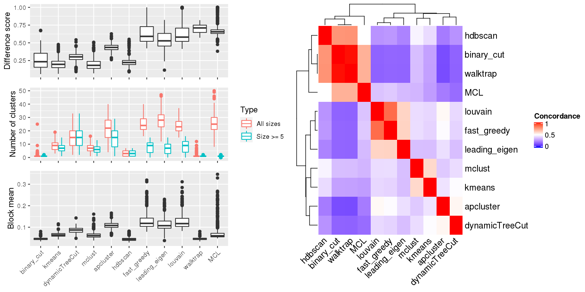

Figure 1.Compare clustering results. Left panel: The difference score, number of clusters and the block mean of different clusterings. Right panel: Concordance between clustering methods. The concordance measures how similar two clusterings are. The definition of the concordance score can be found here.

Table 1.Number of clusters identified by each clustering method. Numbers in the table indicate the number of clusters. The numbers inside the parentheses are the number of clusters with size >= 5.
| ID | binary_cut | kmeans | pam | dynamicTreeCut | mclust | apcluster | hdbscan | fast_greedy | louvain | walktrap | MCL | Details |
|---|---|---|---|---|---|---|---|---|---|---|---|---|
| E-GEOD-104288_g2_g1 | 2(2) | 6(6) | 2(2) | 12(12) | 2(2) | 14(11) | 5(5) | 25(6) | 23(8) | 4(2) | 16(2) | view |
| E-GEOD-10718_A-AFFY-44_g4_g3 | 1(1) | 13(11) | 3(3) | 20(20) | 5(5) | 32(21) | 6(6) | 25(11) | 24(14) | 1(1) | 29(1) | view |
| E-GEOD-10718_A-AFFY-44_g5_g6 | 1(1) | 15(12) | 2(2) | 24(24) | 8(8) | 31(27) | 5(5) | 20(15) | 21(16) | 1(1) | 36(1) | view |
| E-GEOD-10797_A-AFFY-37_g1_g3 | 1(1) | 12(9) | 2(2) | 20(20) | 3(3) | 29(18) | 4(4) | 23(13) | 22(14) | 1(1) | 21(1) | view |
| E-GEOD-10927_A-AFFY-44_g2_g3 | 1(1) | 8(7) | 3(2) | 15(15) | 17(11) | 19(13) | 1(1) | 26(5) | 25(6) | 1(1) | 21(1) | view |
| E-GEOD-11285_A-AFFY-44_g1_g2 | 1(1) | 8(7) | 8(8) | 11(11) | 9(7) | 16(8) | 3(3) | 32(2) | 30(3) | 1(1) | 24(1) | view |
| E-GEOD-11285_A-AFFY-44_g3_g4 | 1(1) | 12(8) | 10(8) | 17(17) | 3(3) | 25(17) | 3(3) | 26(13) | 24(14) | 3(1) | 23(2) | view |
| E-GEOD-11324_A-AFFY-44_g1_g4 | 1(1) | 15(12) | 2(2) | 23(23) | 3(3) | 32(23) | 5(5) | 19(14) | 18(15) | 1(1) | 28(1) | view |
| E-GEOD-11348_A-AFFY-44_g6_g3 | 1(1) | 7(4) | 2(2) | 6(6) | 10(6) | 12(7) | 1(1) | 42(1) | 40(1) | 1(1) | 35(1) | view |
| E-GEOD-11352_A-AFFY-44_g1_g6 | 1(1) | 9(8) | 2(2) | 21(21) | 7(7) | 26(17) | 6(6) | 24(10) | 22(14) | 1(1) | 23(1) | view |
| E-GEOD-11352_A-AFFY-44_g3_g4 | 1(1) | 8(5) | 2(1) | 11(11) | 14(9) | 19(11) | 1(1) | 31(5) | 28(8) | 1(1) | 20(1) | view |
| E-GEOD-11408_A-AFFY-1_g1_g2 | 1(1) | 9(8) | 10(8) | 16(16) | 11(9) | 23(14) | 3(3) | 27(13) | 25(13) | 1(1) | 31(1) | view |
| E-GEOD-11428_A-AFFY-44_g3_g1 | 1(1) | 12(9) | 2(2) | 20(20) | 9(8) | 27(21) | 4(4) | 22(13) | 20(14) | 1(1) | 24(1) | view |
| E-GEOD-11783_A-AFFY-44_g1_g2 | 1(1) | 9(5) | 2(2) | 7(7) | 5(3) | 16(7) | 1(1) | 39(1) | 37(1) | 1(1) | 41(1) | view |
| E-GEOD-11791_A-AFFY-44_g3_g4 | 1(1) | 16(12) | 2(2) | 26(26) | 8(8) | 37(27) | 5(5) | 22(16) | 18(13) | 4(1) | 45(1) | view |
| E-GEOD-11886_A-AFFY-44_g3_g1 | 1(1) | 10(10) | 3(3) | 20(20) | 6(6) | 25(17) | 4(4) | 22(12) | 22(12) | 1(1) | 21(1) | view |
| E-GEOD-11903_A-AFFY-37_g7_g10 | 1(1) | 4(3) | 3(2) | 6(6) | 2(2) | 15(6) | 1(1) | 36(1) | 35(1) | 1(1) | 27(1) | view |
| E-GEOD-11903_A-AFFY-37_g7_g9 | 1(1) | 14(12) | 7(7) | 27(27) | 3(3) | 32(25) | 3(3) | 22(16) | 22(17) | 6(2) | 42(2) | view |
| E-GEOD-11919_A-AFFY-44_g1_g2 | 1(1) | 9(6) | 2(2) | 11(11) | 9(7) | 18(11) | 3(3) | 30(7) | 29(6) | 1(1) | 22(1) | view |
| E-GEOD-11919_A-AFFY-44_g1_g3 | 1(1) | 9(6) | 2(2) | 16(16) | 9(6) | 20(15) | 3(3) | 27(9) | 25(9) | 1(1) | 24(1) | view |
| E-GEOD-12355_A-AFFY-44_g11_g12 | 1(1) | 12(10) | 2(2) | 25(25) | 9(9) | 32(25) | 5(5) | 21(13) | 20(15) | 1(1) | 35(1) | view |
| E-GEOD-12355_A-AFFY-44_g4_g6 | 1(1) | 10(9) | 3(3) | 19(19) | 6(6) | 27(17) | 4(4) | 23(10) | 22(12) | 1(1) | 25(1) | view |
| E-GEOD-12355_A-AFFY-44_g7_g8 | 1(1) | 16(13) | 2(2) | 23(23) | 9(9) | 32(20) | 5(5) | 21(16) | 22(16) | 1(1) | 29(1) | view |
| E-GEOD-12355_A-AFFY-44_g7_g9 | 1(1) | 13(8) | 2(2) | 18(18) | 5(5) | 29(17) | 4(4) | 25(12) | 25(16) | 1(1) | 26(1) | view |
| E-GEOD-12452_A-AFFY-44_g2_g1 | 1(1) | 9(7) | 3(3) | 14(14) | 6(6) | 21(17) | 3(3) | 22(9) | 24(9) | 1(1) | 17(1) | view |
| E-GEOD-12513_A-AFFY-44_g4_g3 | 1(1) | 9(6) | 2(2) | 11(11) | 4(3) | 17(11) | 1(1) | 29(6) | 28(5) | 1(1) | 13(1) | view |
| E-GEOD-12773_A-AFFY-44_g1_g2 | 1(1) | 8(7) | 6(5) | 14(14) | 9(8) | 22(17) | 3(3) | 24(12) | 25(13) | 1(1) | 25(1) | view |
| E-GEOD-12791_A-AFFY-33_g3_g1 | 1(1) | 13(10) | 2(2) | 22(22) | 9(9) | 31(23) | 5(5) | 19(13) | 19(16) | 1(1) | 30(1) | view |
| E-GEOD-12791_A-AFFY-33_g3_g2 | 1(1) | 15(12) | 2(2) | 28(28) | 9(9) | 34(22) | 5(5) | 19(16) | 18(15) | 1(1) | 35(1) | view |
| E-GEOD-12791_A-AFFY-33_g4_g2 | 1(1) | 9(5) | 2(2) | 18(18) | 12(7) | 24(16) | 4(4) | 25(10) | 24(11) | 1(1) | 22(1) | view |
| E-GEOD-12886_A-AFFY-44_g1_g2 | 1(1) | 12(9) | 11(8) | 16(16) | 3(3) | 25(18) | 3(3) | 25(13) | 25(11) | 1(1) | 19(1) | view |
| E-GEOD-12963_A-AFFY-44_g3_g1 | 1(1) | 8(7) | 2(2) | 16(16) | 7(7) | 22(18) | 4(4) | 21(11) | 21(10) | 1(1) | 19(1) | view |
| E-GEOD-13274_A-AFFY-44_g1_g3 | 1(1) | 13(12) | 2(2) | 24(24) | 7(7) | 32(23) | 5(5) | 24(14) | 21(16) | 1(1) | 31(1) | view |
| E-GEOD-13637_A-AFFY-44_g1_g2 | 1(1) | 10(7) | 9(8) | 14(14) | 3(3) | 25(19) | 1(1) | 31(12) | 31(9) | 1(1) | 21(1) | view |
| E-GEOD-13637_A-AFFY-44_g1_g9 | 1(1) | 13(12) | 2(2) | 22(22) | 7(7) | 32(22) | 4(4) | 24(15) | 24(16) | 1(1) | 39(1) | view |
| E-GEOD-13637_A-AFFY-44_g5_g1 | 1(1) | 13(11) | 2(2) | 22(22) | 3(3) | 31(21) | 4(4) | 24(14) | 23(14) | 2(1) | 33(1) | view |
| E-GEOD-13637_A-AFFY-44_g5_g3 | 1(1) | 13(10) | 2(2) | 25(25) | 7(7) | 35(26) | 5(5) | 20(15) | 21(16) | 5(1) | 35(1) | view |
| E-GEOD-13762_A-AFFY-44_g3_g2 | 1(1) | 12(9) | 2(2) | 23(23) | 8(8) | 31(25) | 4(4) | 25(15) | 21(18) | 1(1) | 31(1) | view |
| E-GEOD-13763_A-AFFY-44_g1_g2 | 1(1) | 12(8) | 3(3) | 18(18) | 7(7) | 27(19) | 3(3) | 23(12) | 23(12) | 1(1) | 18(1) | view |
| E-GEOD-13763_A-AFFY-44_g1_g4 | 1(1) | 6(5) | 3(2) | 7(6) | 10(6) | 12(5) | 1(1) | 34(0) | 34(0) | 1(1) | 39(1) | view |
| E-GEOD-13763_A-AFFY-44_g3_g2 | 1(1) | 15(12) | 2(2) | 20(20) | 8(8) | 30(21) | 5(5) | 22(15) | 22(15) | 1(1) | 29(1) | view |
| E-GEOD-13763_A-AFFY-44_g3_g4 | 1(1) | 3(2) | 2(2) | 5(4) | 6(2) | 7(2) | 1(1) | 27(0) | 27(0) | 1(1) | 30(0) | view |
| E-GEOD-13887_A-AFFY-44_g3_g2 | 1(1) | 16(14) | 2(2) | 25(25) | 9(9) | 30(22) | 5(5) | 18(15) | 18(16) | 1(1) | 37(1) | view |
| E-GEOD-13909_A-AFFY-44_g3_g4 | 4(4) | 11(10) | 3(3) | 25(25) | 3(3) | 32(22) | 6(6) | 19(15) | 21(16) | 5(2) | 39(2) | view |
| E-GEOD-13987_A-AFFY-44_g5_g6 | 1(1) | 17(13) | 2(2) | 17(17) | 7(7) | 29(21) | 3(3) | 26(15) | 22(15) | 1(1) | 34(1) | view |
| E-GEOD-1417_A-AFFY-33_g1_g2 | 1(1) | 15(12) | 2(2) | 27(27) | 8(8) | 37(28) | 5(5) | 21(14) | 18(16) | 7(1) | 39(1) | view |
| E-GEOD-14580_A-AFFY-44_g2_g3 | 1(1) | 8(6) | 7(5) | 13(13) | 7(6) | 23(15) | 3(3) | 36(8) | 32(7) | 1(1) | 27(1) | view |
| E-GEOD-14905_A-AFFY-44_g3_g2 | 1(1) | 8(8) | 2(2) | 23(23) | 6(6) | 28(22) | 4(4) | 20(15) | 18(14) | 1(1) | 29(1) | view |
| E-GEOD-14995_A-AFFY-44_g1_g2 | 1(1) | 13(11) | 2(2) | 26(26) | 9(9) | 33(25) | 5(5) | 19(12) | 18(13) | 1(1) | 25(1) | view |
| E-GEOD-15799_A-AFFY-44_g1_g2 | 1(1) | 14(11) | 2(2) | 25(25) | 7(7) | 32(27) | 5(5) | 23(15) | 20(14) | 1(1) | 39(1) | view |
| E-GEOD-15811_A-AFFY-44_g1_g2 | 1(1) | 13(11) | 3(3) | 18(18) | 7(7) | 31(19) | 4(4) | 25(16) | 22(17) | 1(1) | 28(1) | view |
| E-GEOD-15811_A-AFFY-44_g1_g3 | 1(1) | 12(11) | 2(2) | 22(22) | 8(8) | 31(21) | 5(5) | 22(15) | 23(15) | 1(1) | 22(1) | view |
| E-GEOD-15811_A-AFFY-44_g1_g4 | 1(1) | 15(11) | 2(2) | 22(22) | 4(4) | 29(19) | 4(4) | 23(15) | 20(16) | 1(1) | 27(1) | view |
| E-GEOD-15893_A-AFFY-44_g3_g2 | 1(1) | 10(8) | 3(3) | 19(19) | 6(6) | 30(21) | 5(5) | 28(12) | 26(13) | 1(1) | 25(1) | view |
| E-GEOD-15947_A-AFFY-44_g1_g2 | 1(1) | 3(2) | 2(2) | 4(3) | 1(1) | 5(3) | 1(1) | 25(0) | 25(0) | 1(1) | 25(0) | view |
| E-GEOD-1615_A-AFFY-33_g6_g5 | 1(1) | 11(7) | 2(2) | 21(21) | 6(5) | 26(20) | 5(5) | 24(13) | 24(14) | 1(1) | 20(1) | view |
| E-GEOD-1615_A-AFFY-34_g3_g2 | 1(1) | 11(7) | 2(2) | 12(12) | 4(4) | 17(11) | 1(1) | 27(8) | 25(8) | 1(1) | 25(1) | view |
| E-GEOD-16179_A-AFFY-44_g1_g4 | 1(1) | 7(6) | 2(2) | 15(15) | 12(10) | 23(16) | 5(5) | 25(10) | 23(9) | 1(1) | 19(1) | view |
| E-GEOD-16238_A-AFFY-44_g2_g1 | 1(1) | 12(10) | 2(2) | 18(18) | 4(4) | 28(21) | 4(4) | 22(13) | 20(14) | 4(1) | 20(2) | view |
| E-GEOD-16837_A-AFFY-44_g22_g11 | 1(1) | 8(7) | 2(2) | 15(15) | 2(2) | 20(14) | 6(6) | 27(6) | 25(7) | 1(1) | 21(1) | view |
| E-GEOD-16837_A-AFFY-44_g22_g21 | 1(1) | 10(9) | 12(10) | 18(18) | 13(11) | 24(18) | 4(4) | 22(11) | 21(14) | 1(1) | 26(1) | view |
| E-GEOD-16837_A-AFFY-44_g22_g29 | 1(1) | 9(7) | 2(2) | 14(14) | 8(7) | 20(15) | 3(3) | 23(11) | 23(9) | 1(1) | 21(1) | view |
| E-GEOD-16837_A-AFFY-44_g22_g3 | 1(1) | 11(9) | 12(9) | 15(15) | 8(8) | 21(14) | 3(3) | 21(10) | 21(10) | 1(1) | 22(1) | view |
| E-GEOD-16837_A-AFFY-44_g22_g4 | 1(1) | 5(5) | 2(2) | 11(11) | 9(7) | 18(11) | 3(3) | 29(8) | 23(8) | 1(1) | 23(1) | view |
| E-GEOD-16879_A-AFFY-44_g13_g1 | 1(1) | 7(5) | 7(4) | 9(9) | 9(4) | 17(8) | 1(1) | 38(2) | 38(2) | 1(1) | 28(1) | view |
| E-GEOD-16879_A-AFFY-44_g13_g10 | 1(1) | 8(4) | 3(2) | 6(6) | 12(5) | 13(7) | 1(1) | 40(1) | 39(1) | 1(1) | 31(1) | view |
| E-GEOD-16879_A-AFFY-44_g13_g12 | 1(1) | 8(6) | 12(10) | 16(16) | 9(7) | 23(12) | 1(1) | 33(8) | 30(8) | 1(1) | 24(1) | view |
| E-GEOD-17156_A-AFFY-37_g4_g10 | 1(1) | 19(14) | 2(2) | 28(28) | 3(3) | 34(26) | 3(3) | 23(14) | 21(16) | 6(2) | 35(2) | view |
| E-GEOD-17347_A-AFFY-44_g4_g2 | 1(1) | 6(5) | 2(2) | 10(10) | 11(7) | 16(9) | 1(1) | 38(3) | 36(4) | 1(1) | 29(1) | view |
| E-GEOD-17508_A-AFFY-44_g1_g2 | 1(1) | 6(5) | 4(3) | 6(6) | 8(6) | 13(6) | 1(1) | 33(3) | 32(3) | 1(1) | 18(1) | view |
| E-GEOD-18105_A-AFFY-44_g1_g2 | 1(1) | 14(11) | 2(2) | 27(27) | 9(9) | 31(24) | 5(5) | 21(16) | 21(12) | 1(1) | 32(1) | view |
| E-GEOD-18791_A-AFFY-44_g11_g2 | 1(1) | 15(11) | 2(2) | 24(24) | 4(4) | 35(26) | 5(5) | 20(14) | 19(15) | 1(1) | 31(1) | view |
| E-GEOD-18791_A-AFFY-44_g11_g6 | 1(1) | 14(11) | 2(2) | 23(23) | 9(9) | 34(25) | 6(6) | 17(14) | 18(13) | 1(1) | 31(1) | view |
| E-GEOD-19018_A-AFFY-44_g1_g3 | 1(1) | 5(4) | 2(2) | 11(11) | 6(5) | 17(8) | 3(3) | 31(5) | 30(5) | 1(1) | 28(1) | view |
| E-GEOD-19018_A-AFFY-44_g2_g1 | 1(1) | 7(7) | 2(2) | 18(18) | 6(6) | 27(20) | 5(5) | 23(14) | 24(12) | 1(1) | 24(1) | view |
| E-GEOD-19018_A-AFFY-44_g2_g4 | 1(1) | 9(8) | 7(6) | 15(15) | 11(8) | 24(15) | 3(3) | 29(5) | 27(7) | 1(1) | 24(1) | view |
| E-GEOD-19249_A-AFFY-37_g6_g5 | 1(1) | 3(3) | 4(4) | 4(4) | 9(3) | 10(6) | 1(1) | 29(0) | 29(0) | 1(1) | 31(1) | view |
| E-GEOD-19279_A-AFFY-33_g2_g4 | 1(1) | 5(3) | 5(3) | 5(5) | 8(5) | 10(5) | 1(1) | 31(1) | 30(1) | 1(1) | 34(2) | view |
| E-GEOD-19639_A-AFFY-44_g2_g8 | 1(1) | 3(2) | 2(2) | 4(4) | 6(3) | 8(5) | 1(1) | 26(0) | 26(0) | 1(1) | 34(0) | view |
| E-GEOD-19639_A-AFFY-44_g6_g4 | 1(1) | 14(10) | 2(2) | 26(26) | 6(6) | 32(24) | 4(4) | 22(15) | 20(16) | 1(1) | 33(1) | view |
| E-GEOD-19639_A-AFFY-44_g7_g5 | 1(1) | 10(7) | 11(9) | 11(11) | 5(4) | 24(11) | 1(1) | 32(8) | 32(7) | 1(1) | 28(1) | view |
| E-GEOD-19650_A-AFFY-44_g4_g1 | 1(1) | 7(4) | 2(2) | 9(9) | 4(4) | 12(7) | 1(1) | 41(2) | 40(3) | 1(1) | 33(1) | view |
| E-GEOD-19650_A-AFFY-44_g4_g2 | 1(1) | 6(5) | 6(5) | 7(7) | 5(4) | 17(6) | 1(1) | 38(1) | 37(2) | 1(1) | 37(1) | view |
| E-GEOD-19650_A-AFFY-44_g4_g3 | 1(1) | 4(3) | 6(5) | 7(6) | 9(4) | 13(6) | 1(1) | 37(0) | 34(1) | 1(1) | 35(1) | view |
| E-GEOD-20193_A-AFFY-44_g3_g1 | 1(1) | 16(10) | 2(2) | 24(24) | 3(3) | 25(17) | 1(1) | 24(11) | 23(12) | 1(1) | 24(1) | view |
| E-GEOD-20505_A-AFFY-44_g7_g4 | 1(1) | 12(6) | 2(2) | 16(16) | 12(7) | 26(15) | 1(1) | 25(11) | 23(10) | 1(1) | 15(1) | view |
| E-GEOD-20505_A-AFFY-44_g7_g5 | 1(1) | 3(3) | 3(2) | 4(4) | 6(3) | 9(2) | 1(1) | 27(0) | 26(0) | 1(1) | 29(0) | view |
| E-GEOD-20602_A-AFFY-33_g1_g2 | 5(2) | 9(8) | 2(2) | 6(6) | 7(5) | 13(6) | 1(1) | 28(3) | 28(3) | 1(1) | 18(1) | view |
| E-GEOD-21422_A-AFFY-44_g3_g1 | 1(1) | 10(9) | 3(3) | 17(17) | 9(7) | 24(14) | 3(3) | 27(11) | 25(10) | 1(1) | 23(1) | view |
| E-GEOD-21422_A-AFFY-44_g3_g2 | 1(1) | 11(8) | 2(2) | 19(19) | 11(7) | 28(17) | 1(1) | 24(14) | 21(14) | 1(1) | 27(1) | view |
| E-GEOD-21610_A-AFFY-44_g5_g1 | 1(1) | 3(3) | 4(3) | 4(4) | 7(4) | 10(2) | 1(1) | 28(0) | 28(0) | 1(1) | 27(1) | view |
| E-GEOD-22139_A-AFFY-44_g6_g3 | 1(1) | 9(7) | 2(2) | 16(16) | 11(8) | 25(13) | 4(4) | 27(12) | 24(11) | 1(1) | 21(1) | view |
| E-GEOD-22278_A-AFFY-41_g5_g1 | 1(1) | 10(7) | 2(2) | 16(16) | 11(7) | 20(12) | 3(3) | 24(9) | 23(11) | 1(1) | 14(1) | view |
| E-GEOD-22385_A-AFFY-37_g1_g2 | 1(1) | 17(13) | 2(2) | 24(24) | 9(9) | 32(24) | 5(5) | 20(14) | 20(14) | 1(1) | 30(1) | view |
| E-GEOD-22529_A-AFFY-33_g2_g1 | 1(1) | 4(3) | 3(2) | 8(8) | 6(4) | 16(6) | 1(1) | 34(2) | 32(2) | 1(1) | 42(2) | view |
| E-GEOD-22611_A-AFFY-44_g2_g3 | 1(1) | 6(5) | 2(2) | 7(7) | 11(6) | 12(7) | 3(3) | 26(4) | 26(4) | 1(1) | 16(1) | view |
| E-GEOD-22611_A-AFFY-44_g9_g4 | 1(1) | 7(4) | 2(2) | 8(8) | 13(6) | 12(6) | 3(3) | 29(3) | 28(3) | 1(1) | 23(1) | view |
| E-GEOD-22779_A-AFFY-44_g4_g3 | 1(1) | 4(2) | 3(3) | 3(2) | 5(3) | 7(3) | 1(1) | 22(0) | 22(0) | 1(1) | 26(0) | view |
| E-GEOD-23610_A-AFFY-44_g1_g2 | 1(1) | 13(10) | 2(2) | 21(21) | 3(3) | 30(19) | 4(4) | 25(16) | 22(15) | 5(2) | 28(1) | view |
| E-GEOD-23764_A-AFFY-44_g4_g1 | 1(1) | 10(8) | 2(2) | 20(20) | 10(7) | 26(18) | 4(4) | 23(13) | 24(13) | 1(1) | 24(1) | view |
| E-GEOD-23764_A-AFFY-44_g4_g2 | 1(1) | 12(11) | 2(2) | 24(24) | 8(8) | 31(24) | 5(5) | 20(13) | 20(16) | 1(1) | 31(1) | view |
| E-GEOD-23930_A-AGIL-28_g1_g2 | 1(1) | 9(8) | 2(2) | 21(21) | 5(5) | 28(21) | 5(5) | 28(13) | 27(12) | 1(1) | 32(1) | view |
| E-GEOD-23930_A-AGIL-28_g2_g4 | 1(1) | 8(5) | 6(4) | 6(6) | 7(4) | 14(7) | 1(1) | 36(1) | 36(1) | 1(1) | 25(1) | view |
| E-GEOD-24592_A-AFFY-37_g1_g3 | 1(1) | 8(7) | 3(3) | 16(16) | 7(7) | 25(21) | 5(5) | 26(12) | 24(12) | 1(1) | 19(1) | view |
| E-GEOD-24592_A-AFFY-37_g1_g5 | 1(1) | 8(5) | 9(6) | 10(10) | 8(6) | 18(8) | 1(1) | 30(4) | 26(4) | 1(1) | 27(1) | view |
| E-GEOD-24592_A-AFFY-37_g2_g6 | 1(1) | 6(4) | 9(6) | 9(9) | 8(5) | 19(12) | 1(1) | 30(6) | 26(8) | 1(1) | 16(1) | view |
| E-GEOD-24592_A-AFFY-37_g4_g3 | 1(1) | 7(6) | 6(6) | 13(13) | 7(5) | 19(13) | 3(3) | 34(9) | 29(9) | 1(1) | 34(1) | view |
| E-GEOD-24592_A-AFFY-37_g6_g5 | 1(1) | 10(7) | 9(7) | 12(12) | 7(5) | 20(11) | 1(1) | 32(6) | 30(6) | 1(1) | 24(1) | view |
| E-GEOD-24849_A-AFFY-44_g4_g3 | 1(1) | 9(7) | 3(3) | 12(12) | 14(11) | 20(14) | 5(5) | 23(9) | 20(8) | 1(1) | 21(1) | view |
| E-GEOD-25412_A-AFFY-141_g3_g1 | 1(1) | 11(10) | 2(2) | 25(25) | 9(9) | 34(24) | 5(5) | 21(14) | 18(16) | 1(1) | 37(1) | view |
| E-GEOD-25412_A-AFFY-141_g3_g2 | 1(1) | 9(6) | 2(2) | 18(18) | 12(9) | 23(19) | 3(3) | 26(11) | 19(13) | 1(1) | 17(1) | view |
| E-GEOD-26370_A-AFFY-37_g4_g3 | 1(1) | 11(10) | 2(2) | 25(25) | 3(3) | 37(28) | 5(5) | 21(15) | 20(16) | 1(1) | 43(1) | view |
| E-GEOD-26656_A-AFFY-44_g3_g1 | 1(1) | 6(4) | 2(2) | 6(6) | 7(6) | 11(7) | 1(1) | 38(2) | 38(2) | 1(1) | 28(1) | view |
| E-GEOD-26656_A-AFFY-44_g4_g2 | 1(1) | 6(4) | 4(2) | 5(5) | 3(3) | 10(5) | 1(1) | 33(1) | 33(1) | 1(1) | 31(1) | view |
| E-GEOD-26834_A-AFFY-37_g1_g4 | 1(1) | 13(11) | 2(2) | 27(27) | 7(7) | 35(25) | 5(5) | 19(14) | 19(17) | 1(1) | 32(1) | view |
| E-GEOD-28542_A-AFFY-141_g4_g2 | 1(1) | 12(10) | 2(2) | 23(23) | 9(9) | 32(23) | 6(6) | 22(12) | 18(15) | 1(1) | 26(1) | view |
| E-GEOD-28542_A-AFFY-141_g4_g3 | 1(1) | 14(11) | 2(2) | 22(22) | 4(4) | 34(21) | 6(6) | 23(14) | 21(15) | 3(1) | 33(2) | view |
| E-GEOD-28542_A-AFFY-141_g8_g6 | 1(1) | 8(5) | 2(2) | 7(7) | 5(4) | 15(7) | 1(1) | 29(3) | 28(3) | 1(1) | 21(1) | view |
| E-GEOD-28784_A-AFFY-33_g2_g3 | 1(1) | 9(6) | 6(4) | 12(12) | 10(6) | 23(11) | 1(1) | 29(11) | 26(12) | 1(1) | 25(1) | view |
| E-GEOD-28877_A-AGIL-28_g2_g1 | 1(1) | 15(12) | 2(2) | 26(26) | 8(8) | 35(24) | 5(5) | 20(15) | 20(13) | 1(1) | 37(1) | view |
| E-GEOD-29137_A-AFFY-44_g4_g1 | 1(1) | 4(3) | 5(4) | 9(9) | 5(4) | 14(6) | 1(1) | 34(1) | 33(1) | 1(1) | 37(1) | view |
| E-GEOD-29137_A-AFFY-44_g4_g2 | 1(1) | 7(5) | 4(2) | 7(7) | 7(5) | 13(6) | 1(1) | 36(2) | 36(2) | 1(1) | 32(1) | view |
| E-GEOD-29137_A-AFFY-44_g4_g3 | 1(1) | 7(4) | 6(6) | 6(6) | 3(3) | 14(4) | 1(1) | 36(1) | 36(1) | 1(1) | 52(0) | view |
| E-GEOD-29598_A-AFFY-37_g4_g3 | 1(1) | 12(10) | 2(2) | 22(22) | 15(10) | 26(19) | 5(5) | 21(14) | 18(14) | 1(1) | 18(1) | view |
| E-GEOD-30448_A-AFFY-141_g1_g2 | 1(1) | 8(8) | 2(2) | 17(17) | 14(11) | 26(19) | 5(5) | 24(11) | 24(12) | 1(1) | 19(1) | view |
| E-GEOD-30531_A-AFFY-44_g4_g9 | 1(1) | 5(5) | 7(6) | 10(10) | 5(5) | 15(8) | 3(3) | 31(3) | 31(2) | 1(1) | 35(1) | view |
| E-GEOD-30784_A-AFFY-44_g2_g1 | 1(1) | 13(10) | 2(2) | 11(11) | 11(7) | 17(10) | 1(1) | 40(3) | 38(3) | 1(1) | 32(1) | view |
| E-GEOD-31193_A-AFFY-44_g2_g5 | 1(1) | 7(7) | 3(3) | 14(14) | 9(6) | 22(17) | 3(3) | 26(11) | 24(12) | 1(1) | 26(1) | view |
| E-GEOD-31455_A-AFFY-44_g2_g3 | 4(1) | 3(2) | 2(1) | 4(3) | 1(1) | 8(2) | 1(1) | 24(0) | 24(0) | 1(1) | 26(0) | view |
| E-GEOD-31812_A-AFFY-141_g1_g2 | 1(1) | 9(6) | 6(3) | 11(11) | 9(6) | 19(11) | 3(3) | 30(8) | 26(8) | 1(1) | 23(1) | view |
| E-GEOD-3183_A-AFFY-33_g4_g2 | 1(1) | 8(6) | 3(2) | 11(10) | 3(3) | 19(10) | 3(3) | 29(6) | 25(6) | 2(1) | 26(1) | view |
| E-GEOD-31986_A-AFFY-141_g1_g3 | 1(1) | 4(4) | 2(2) | 4(4) | 8(3) | 10(3) | 1(1) | 28(1) | 27(1) | 1(1) | 21(1) | view |
| E-GEOD-32876_A-AFFY-44_g1_g2 | 1(1) | 8(7) | 2(2) | 13(13) | 6(5) | 21(13) | 1(1) | 29(7) | 28(7) | 1(1) | 27(1) | view |
| E-GEOD-32924_A-AFFY-44_g3_g1 | 1(1) | 5(4) | 2(2) | 7(7) | 12(8) | 13(7) | 1(1) | 25(3) | 25(4) | 1(1) | 18(1) | view |
| E-GEOD-3307_A-AFFY-33_g1_g13 | 4(1) | 3(2) | 2(2) | 3(2) | 6(3) | 9(2) | 1(1) | 26(0) | 26(0) | 1(1) | 30(0) | view |
| E-GEOD-3307_A-AFFY-33_g1_g7 | 1(1) | 4(2) | 6(4) | 6(6) | 9(6) | 13(6) | 1(1) | 35(1) | 34(1) | 1(1) | 31(1) | view |
| E-GEOD-3307_A-AFFY-34_g14_g15 | 1(1) | 8(7) | 4(3) | 8(8) | 6(4) | 19(8) | 1(1) | 36(4) | 32(6) | 1(1) | 23(1) | view |
| E-GEOD-3307_A-AFFY-34_g14_g20 | 1(1) | 10(8) | 2(2) | 18(18) | 8(7) | 27(17) | 4(4) | 25(15) | 23(12) | 1(1) | 25(1) | view |
| E-GEOD-3307_A-AFFY-34_g14_g24 | 1(1) | 9(9) | 3(3) | 25(25) | 6(6) | 27(23) | 5(5) | 22(15) | 18(17) | 1(1) | 25(1) | view |
| E-GEOD-3307_A-AFFY-34_g14_g25 | 1(1) | 11(8) | 2(2) | 19(19) | 8(8) | 28(17) | 1(1) | 23(12) | 21(15) | 1(1) | 27(1) | view |
| E-GEOD-33552_A-AFFY-141_g9_g7 | 1(1) | 14(12) | 4(3) | 22(21) | 4(4) | 30(20) | 5(5) | 23(14) | 21(16) | 1(1) | 32(2) | view |
| E-GEOD-33643_A-AFFY-44_g7_g4 | 1(1) | 5(4) | 7(5) | 8(8) | 11(7) | 18(9) | 1(1) | 39(1) | 37(1) | 1(1) | 40(1) | view |
| E-GEOD-33643_A-AFFY-44_g7_g5 | 1(1) | 5(3) | 5(4) | 7(6) | 8(6) | 11(6) | 1(1) | 34(1) | 34(1) | 1(1) | 37(2) | view |
| E-GEOD-33643_A-AFFY-44_g7_g8 | 1(1) | 6(5) | 3(2) | 6(6) | 11(6) | 13(6) | 1(1) | 39(1) | 39(1) | 1(1) | 29(1) | view |
| E-GEOD-33950_A-AFFY-44_g1_g2 | 1(1) | 11(9) | 2(2) | 22(22) | 5(5) | 31(21) | 5(5) | 21(15) | 21(16) | 1(1) | 27(1) | view |
| E-GEOD-34635_A-AFFY-44_g1_g5 | 1(1) | 6(5) | 3(3) | 13(13) | 15(9) | 18(14) | 3(3) | 32(5) | 29(5) | 1(1) | 22(1) | view |
| E-GEOD-34670_A-AFFY-33_g2_g1 | 1(1) | 12(9) | 2(2) | 18(18) | 10(7) | 28(20) | 5(5) | 23(12) | 22(15) | 1(1) | 21(1) | view |
| E-GEOD-35006_A-AFFY-44_g2_g1 | 1(1) | 14(11) | 2(2) | 19(19) | 6(6) | 24(18) | 5(5) | 18(13) | 16(13) | 1(1) | 19(1) | view |
| E-GEOD-35006_A-AFFY-44_g4_g3 | 1(1) | 13(12) | 2(2) | 25(25) | 5(5) | 30(24) | 6(6) | 20(15) | 20(16) | 1(1) | 28(1) | view |
| E-GEOD-35006_A-AFFY-44_g6_g5 | 1(1) | 12(10) | 2(2) | 20(20) | 4(4) | 26(19) | 5(5) | 17(12) | 18(12) | 1(1) | 21(1) | view |
| E-GEOD-35198_A-AFFY-44_g2_g1 | 1(1) | 10(10) | 2(2) | 19(19) | 8(8) | 26(21) | 5(5) | 23(14) | 25(13) | 1(1) | 29(1) | view |
| E-GEOD-36035_A-AFFY-141_g4_g2 | 1(1) | 11(8) | 3(3) | 16(16) | 8(7) | 21(13) | 3(3) | 31(8) | 28(12) | 1(1) | 24(1) | view |
| E-GEOD-36076_A-AFFY-44_g3_g2 | 1(1) | 13(10) | 2(2) | 26(26) | 9(9) | 32(23) | 5(5) | 21(14) | 21(14) | 1(1) | 32(1) | view |
| E-GEOD-36287_A-AFFY-44_g7_g5 | 2(1) | 8(6) | 2(1) | 13(12) | 2(2) | 22(10) | 3(3) | 36(5) | 36(5) | 1(1) | 32(2) | view |
| E-GEOD-36509_A-AFFY-141_g4_g6 | 1(1) | 8(6) | 2(2) | 14(14) | 6(6) | 24(14) | 4(4) | 28(9) | 27(10) | 1(1) | 17(1) | view |
| E-GEOD-37571_A-AGIL-28_g18_g9 | 1(1) | 13(10) | 2(2) | 18(18) | 6(6) | 26(19) | 4(4) | 21(14) | 21(16) | 2(1) | 16(1) | view |
| E-GEOD-37911_A-AFFY-141_g3_g1 | 1(1) | 8(4) | 2(2) | 8(8) | 7(3) | 17(10) | 3(3) | 30(5) | 30(5) | 1(1) | 27(1) | view |
| E-GEOD-37911_A-AFFY-141_g3_g2 | 1(1) | 6(4) | 2(2) | 8(8) | 11(5) | 13(4) | 3(3) | 29(2) | 28(2) | 1(1) | 17(1) | view |
| E-GEOD-39685_A-AFFY-141_g2_g1 | 1(1) | 10(6) | 9(6) | 10(10) | 3(3) | 23(12) | 3(3) | 30(9) | 26(8) | 1(1) | 30(1) | view |
| E-GEOD-39843_A-AFFY-44_g2_g1 | 1(1) | 4(3) | 3(3) | 5(5) | 6(3) | 7(6) | 1(1) | 29(0) | 28(0) | 1(1) | 33(1) | view |
| E-GEOD-39843_A-AFFY-44_g4_g3 | 1(1) | 3(1) | 2(2) | 4(4) | 5(2) | 8(2) | 1(1) | 23(0) | 23(0) | 1(1) | 25(0) | view |
| E-GEOD-40613_A-AFFY-44_g4_g3 | 1(1) | 4(2) | 2(2) | 4(3) | 5(3) | 8(3) | 1(1) | 24(0) | 24(0) | 1(1) | 25(0) | view |
| E-GEOD-40750_A-AFFY-44_g2_g1 | 1(1) | 4(2) | 2(2) | 4(3) | 6(2) | 7(2) | 1(1) | 28(0) | 28(0) | 1(1) | 31(0) | view |
| E-GEOD-40885_A-AFFY-44_g2_g1 | 1(1) | 6(3) | 5(3) | 9(9) | 13(7) | 15(7) | 1(1) | 40(2) | 39(2) | 1(1) | 40(1) | view |
| E-GEOD-40968_A-AFFY-44_g6_g5 | 1(1) | 5(4) | 5(3) | 7(7) | 2(2) | 14(5) | 1(1) | 37(1) | 37(1) | 2(1) | 31(1) | view |
| E-GEOD-40986_A-AFFY-44_g2_g1 | 1(1) | 10(8) | 10(7) | 15(15) | 4(4) | 26(15) | 3(3) | 35(9) | 31(10) | 1(1) | 37(1) | view |
| E-GEOD-41326_A-AFFY-44_g1_g2 | 1(1) | 9(7) | 2(2) | 12(12) | 6(5) | 22(13) | 3(3) | 31(7) | 28(11) | 1(1) | 22(1) | view |
| E-GEOD-41364_A-AFFY-44_g3_g1 | 1(1) | 14(10) | 2(2) | 24(24) | 4(4) | 33(24) | 5(5) | 21(12) | 20(17) | 1(1) | 39(1) | view |
| E-GEOD-41405_A-AFFY-141_g1_g3 | 1(1) | 11(9) | 2(2) | 17(17) | 6(5) | 25(18) | 5(5) | 23(12) | 21(15) | 1(1) | 22(1) | view |
| E-GEOD-41405_A-AFFY-141_g1_g6 | 1(1) | 13(8) | 2(2) | 18(18) | 7(6) | 28(19) | 4(4) | 26(13) | 21(16) | 1(1) | 25(1) | view |
| E-GEOD-41405_A-AFFY-141_g1_g7 | 1(1) | 11(9) | 2(2) | 16(16) | 8(6) | 22(14) | 3(3) | 29(8) | 28(7) | 1(1) | 18(1) | view |
| E-GEOD-41405_A-AFFY-141_g1_g8 | 1(1) | 10(7) | 2(2) | 13(13) | 10(7) | 24(12) | 3(3) | 30(11) | 28(11) | 1(1) | 20(1) | view |
| E-GEOD-41459_A-AFFY-44_g1_g2 | 1(1) | 9(7) | 2(2) | 7(7) | 11(7) | 12(8) | 1(1) | 25(3) | 23(5) | 1(1) | 14(1) | view |
| E-GEOD-41586_g3_g1 | 1(1) | 12(10) | 2(2) | 23(23) | 6(6) | 32(19) | 3(3) | 25(13) | 22(15) | 2(1) | 39(1) | view |
| E-GEOD-41663_A-AFFY-44_g6_g2 | 1(1) | 8(5) | 5(3) | 6(6) | 4(3) | 16(6) | 1(1) | 35(1) | 34(2) | 1(1) | 21(1) | view |
| E-GEOD-41678_A-AFFY-141_g14_g12 | 1(1) | 10(8) | 8(6) | 13(13) | 8(5) | 23(14) | 3(3) | 31(6) | 28(6) | 1(1) | 25(1) | view |
| E-GEOD-41678_A-AFFY-141_g19_g18 | 1(1) | 11(10) | 2(2) | 26(26) | 6(6) | 32(24) | 5(5) | 22(12) | 20(16) | 1(1) | 33(1) | view |
| E-GEOD-41678_A-AFFY-141_g22_g20 | 1(1) | 8(8) | 2(2) | 21(21) | 9(9) | 28(22) | 6(6) | 20(13) | 21(14) | 1(1) | 25(1) | view |
| E-GEOD-41678_A-AFFY-141_g8_g6 | 1(1) | 15(12) | 2(2) | 22(22) | 8(8) | 30(21) | 5(5) | 20(13) | 19(13) | 1(1) | 33(1) | view |
| E-GEOD-41678_A-AFFY-141_g8_g7 | 1(1) | 7(6) | 8(7) | 13(13) | 9(7) | 21(10) | 4(4) | 25(7) | 24(8) | 1(1) | 18(1) | view |
| E-GEOD-4183_A-AFFY-44_g3_g2 | 1(1) | 4(3) | 8(6) | 7(7) | 4(3) | 16(7) | 1(1) | 38(2) | 37(2) | 1(1) | 26(1) | view |
| E-GEOD-42619_A-AGIL-28_g8_g2 | 1(1) | 11(8) | 2(2) | 15(15) | 3(3) | 27(13) | 3(3) | 28(12) | 31(14) | 1(1) | 38(1) | view |
| E-GEOD-42781_A-AFFY-141_g2_g3 | 1(1) | 10(9) | 2(2) | 19(19) | 9(8) | 29(21) | 6(6) | 22(13) | 22(16) | 1(1) | 27(1) | view |
| E-GEOD-43288_A-AFFY-33_g2_g3 | 2(1) | 4(2) | 2(1) | 3(2) | 5(2) | 6(2) | 1(1) | 22(0) | 22(0) | 1(1) | 23(0) | view |
| E-GEOD-43552_A-AFFY-44_g2_g1 | 1(1) | 8(6) | 2(2) | 17(17) | 11(8) | 24(16) | 3(3) | 28(10) | 27(10) | 1(1) | 22(1) | view |
| E-GEOD-44097_A-AFFY-44_g1_g2 | 1(1) | 7(6) | 2(2) | 9(9) | 5(5) | 17(7) | 1(1) | 37(2) | 33(3) | 1(1) | 33(1) | view |
| E-GEOD-44379_g2_g1 | 1(1) | 9(7) | 3(3) | 14(14) | 2(2) | 21(17) | 4(4) | 21(11) | 22(10) | 1(1) | 16(1) | view |
| E-GEOD-44384_g1_g2 | 1(1) | 15(11) | 2(2) | 23(23) | 8(8) | 37(27) | 5(5) | 21(15) | 23(16) | 1(1) | 38(1) | view |
| E-GEOD-44392_A-AFFY-141_g2_g1 | 1(1) | 13(10) | 2(2) | 23(23) | 3(3) | 30(23) | 5(5) | 26(14) | 22(17) | 1(1) | 30(2) | view |
| E-GEOD-44392_A-AFFY-141_g4_g1 | 1(1) | 10(8) | 2(2) | 18(18) | 7(7) | 25(17) | 5(5) | 21(15) | 24(16) | 1(1) | 24(1) | view |
| E-GEOD-44596_A-AFFY-44_g2_g1 | 1(1) | 8(7) | 3(3) | 14(14) | 10(9) | 23(14) | 3(3) | 23(8) | 23(9) | 1(1) | 18(1) | view |
| E-GEOD-45581_A-AGIL-28_g3_g1 | 1(1) | 5(4) | 5(5) | 6(6) | 3(3) | 11(6) | 3(3) | 24(2) | 23(2) | 1(1) | 17(1) | view |
| E-GEOD-45757_A-AFFY-37_g11_g10 | 1(1) | 11(8) | 3(3) | 19(19) | 9(7) | 28(20) | 4(4) | 26(15) | 26(15) | 1(1) | 30(1) | view |
| E-GEOD-45757_A-AFFY-37_g13_g12 | 1(1) | 13(10) | 2(2) | 25(25) | 6(6) | 34(26) | 5(5) | 24(14) | 24(16) | 1(1) | 38(1) | view |
| E-GEOD-45757_A-AFFY-37_g17_g16 | 1(1) | 15(12) | 2(2) | 21(21) | 3(3) | 35(26) | 5(5) | 25(15) | 21(15) | 6(2) | 36(1) | view |
| E-GEOD-45757_A-AFFY-37_g19_g18 | 1(1) | 6(4) | 4(4) | 6(6) | 6(5) | 9(4) | 1(1) | 26(0) | 26(0) | 1(1) | 34(0) | view |
| E-GEOD-45757_A-AFFY-37_g21_g20 | 1(1) | 12(10) | 2(2) | 26(26) | 3(3) | 37(26) | 6(6) | 21(14) | 21(15) | 4(2) | 44(2) | view |
| E-GEOD-45757_A-AFFY-37_g23_g22 | 1(1) | 8(8) | 3(3) | 19(19) | 9(9) | 30(19) | 4(4) | 26(12) | 29(12) | 1(1) | 27(1) | view |
| E-GEOD-45757_A-AFFY-37_g29_g28 | 1(1) | 6(5) | 7(5) | 6(6) | 5(3) | 13(7) | 1(1) | 30(4) | 29(4) | 1(1) | 24(1) | view |
| E-GEOD-45757_A-AFFY-37_g37_g36 | 1(1) | 11(10) | 2(2) | 25(25) | 6(6) | 34(27) | 4(4) | 22(15) | 22(16) | 1(1) | 42(1) | view |
| E-GEOD-45757_A-AFFY-37_g41_g40 | 1(1) | 14(12) | 2(2) | 22(22) | 7(7) | 31(21) | 4(4) | 23(15) | 17(14) | 1(1) | 27(1) | view |
| E-GEOD-45757_A-AFFY-37_g43_g42 | 1(1) | 13(10) | 2(2) | 22(22) | 7(7) | 32(22) | 4(4) | 22(14) | 22(16) | 1(1) | 37(1) | view |
| E-GEOD-45757_A-AFFY-37_g45_g44 | 1(1) | 10(8) | 2(2) | 22(22) | 7(7) | 29(20) | 4(4) | 25(15) | 24(16) | 1(1) | 24(1) | view |
| E-GEOD-45757_A-AFFY-37_g5_g4 | 1(1) | 8(6) | 8(6) | 10(10) | 5(4) | 19(11) | 1(1) | 34(5) | 33(5) | 1(1) | 24(1) | view |
| E-GEOD-45757_A-AFFY-37_g7_g6 | 1(1) | 5(4) | 2(1) | 6(5) | 6(3) | 10(4) | 1(1) | 28(1) | 28(1) | 1(1) | 19(1) | view |
| E-GEOD-4600_A-AFFY-44_g2_g1 | 1(1) | 7(6) | 3(3) | 18(18) | 9(7) | 25(21) | 3(3) | 24(14) | 21(11) | 1(1) | 28(1) | view |
| E-GEOD-46490_g1_g2 | 1(1) | 11(8) | 11(8) | 13(13) | 4(4) | 21(11) | 3(3) | 33(6) | 34(6) | 1(1) | 34(1) | view |
| E-GEOD-46538_A-AFFY-44_g3_g1 | 1(1) | 11(8) | 2(2) | 25(25) | 9(9) | 30(20) | 3(3) | 22(15) | 21(15) | 1(1) | 31(1) | view |
| E-GEOD-46590_A-AFFY-141_g1_g2 | 1(1) | 10(7) | 2(2) | 17(17) | 8(7) | 23(19) | 5(5) | 24(12) | 20(14) | 1(1) | 23(1) | view |
| E-GEOD-46687_A-AFFY-44_g3_g2 | 1(1) | 6(3) | 7(4) | 8(8) | 14(9) | 15(9) | 1(1) | 29(4) | 27(4) | 1(1) | 21(1) | view |
| E-GEOD-46884_A-AFFY-37_g5_g4 | 1(1) | 12(5) | 8(6) | 7(7) | 2(2) | 17(7) | 3(3) | 35(4) | 32(4) | 1(1) | 21(1) | view |
| E-GEOD-47739_A-AFFY-141_g2_g1 | 1(1) | 16(12) | 2(2) | 21(21) | 3(3) | 32(22) | 6(6) | 20(14) | 22(16) | 1(1) | 33(2) | view |
| E-GEOD-48121_A-AFFY-37_g3_g2 | 1(1) | 17(14) | 2(2) | 31(31) | 5(5) | 42(32) | 3(3) | 19(14) | 19(17) | 1(1) | 57(2) | view |
| E-GEOD-48258_A-AFFY-44_g3_g2 | 1(1) | 11(9) | 3(3) | 22(22) | 8(8) | 29(19) | 5(5) | 21(15) | 19(15) | 1(1) | 27(1) | view |
| E-GEOD-48350_A-AFFY-44_g6_g2 | 1(1) | 6(4) | 2(2) | 9(9) | 7(5) | 17(9) | 3(3) | 28(4) | 26(6) | 1(1) | 23(2) | view |
| E-GEOD-48433_A-AFFY-44_g161_g162 | 1(1) | 11(10) | 2(2) | 20(20) | 3(3) | 29(18) | 5(5) | 26(14) | 23(15) | 1(1) | 29(1) | view |
| E-GEOD-48433_A-AFFY-44_g161_g163 | 1(1) | 8(6) | 2(2) | 20(20) | 7(7) | 22(16) | 3(3) | 23(12) | 23(12) | 1(1) | 22(1) | view |
| E-GEOD-48433_A-AFFY-44_g161_g164 | 1(1) | 8(6) | 6(4) | 13(13) | 11(7) | 17(12) | 3(3) | 32(6) | 30(7) | 1(1) | 27(1) | view |
| E-GEOD-48433_A-AFFY-44_g48_g50 | 1(1) | 16(13) | 2(2) | 24(24) | 3(3) | 33(22) | 5(5) | 24(11) | 20(15) | 1(1) | 27(1) | view |
| E-GEOD-48786_A-AFFY-44_g2_g1 | 1(1) | 6(5) | 3(3) | 9(9) | 13(8) | 16(8) | 1(1) | 32(3) | 31(3) | 1(1) | 23(1) | view |
| E-GEOD-4883_A-AFFY-44_g1_g2 | 1(1) | 7(6) | 6(4) | 10(10) | 8(5) | 18(11) | 3(3) | 35(4) | 34(6) | 1(1) | 35(1) | view |
| E-GEOD-48937_A-AFFY-141_g1_g3 | 1(1) | 12(11) | 2(2) | 29(29) | 8(8) | 35(26) | 5(5) | 20(15) | 21(16) | 1(1) | 49(1) | view |
| E-GEOD-49284_A-AFFY-44_g13_g1 | 1(1) | 4(3) | 2(2) | 4(4) | 4(3) | 8(3) | 1(1) | 28(0) | 27(0) | 1(1) | 32(1) | view |
| E-GEOD-49284_A-AFFY-44_g21_g25 | 1(1) | 10(5) | 9(7) | 9(9) | 6(3) | 16(10) | 1(1) | 36(5) | 34(5) | 1(1) | 27(1) | view |
| E-GEOD-49284_A-AFFY-44_g21_g5 | 1(1) | 15(11) | 2(2) | 26(26) | 7(7) | 35(24) | 3(3) | 20(14) | 20(15) | 1(1) | 38(1) | view |
| E-GEOD-49284_A-AFFY-44_g23_g27 | 1(1) | 6(4) | 5(4) | 8(7) | 8(4) | 13(3) | 1(1) | 37(0) | 37(0) | 1(1) | 39(1) | view |
| E-GEOD-49284_A-AFFY-44_g31_g35 | 1(1) | 9(7) | 2(2) | 19(19) | 4(4) | 29(17) | 6(6) | 24(15) | 21(16) | 1(1) | 24(1) | view |
| E-GEOD-49515_A-AFFY-44_g3_g2 | 1(1) | 16(13) | 2(2) | 26(26) | 9(9) | 32(23) | 5(5) | 21(14) | 21(14) | 1(1) | 32(1) | view |
| E-GEOD-50572_A-AFFY-44_g4_g2 | 1(1) | 12(11) | 2(2) | 21(21) | 11(9) | 26(19) | 3(3) | 24(11) | 20(14) | 1(1) | 18(1) | view |
| E-GEOD-50693_A-AFFY-37_g1_g2 | 1(1) | 12(10) | 2(2) | 23(23) | 5(5) | 31(23) | 4(4) | 22(15) | 23(14) | 1(1) | 35(1) | view |
| E-GEOD-50693_A-AFFY-37_g1_g4 | 1(1) | 10(9) | 2(2) | 20(20) | 8(8) | 30(24) | 5(5) | 21(13) | 22(10) | 1(1) | 22(1) | view |
| E-GEOD-50693_A-AFFY-37_g5_g4 | 1(1) | 5(5) | 9(7) | 12(12) | 5(5) | 17(11) | 1(1) | 34(4) | 30(4) | 1(1) | 20(1) | view |
| E-GEOD-50694_A-AFFY-37_g5_g4 | 1(1) | 12(9) | 2(2) | 24(24) | 7(7) | 33(25) | 4(4) | 23(16) | 23(18) | 1(1) | 38(1) | view |
| E-GEOD-51258_A-AFFY-44_g1_g2 | 1(1) | 6(6) | 2(2) | 17(17) | 9(8) | 24(18) | 4(4) | 23(12) | 21(13) | 1(1) | 27(1) | view |
| E-GEOD-51261_g3_g1 | 1(1) | 14(11) | 2(2) | 24(24) | 6(6) | 34(25) | 6(6) | 22(14) | 21(17) | 1(1) | 43(1) | view |
| E-GEOD-51651_A-AFFY-44_g2_g1 | 1(1) | 6(4) | 6(3) | 8(8) | 10(6) | 15(7) | 1(1) | 33(3) | 32(3) | 1(1) | 26(1) | view |
| E-GEOD-51704_A-AFFY-44_g12_g11 | 1(1) | 6(4) | 8(5) | 11(11) | 15(8) | 18(9) | 3(3) | 41(2) | 39(3) | 1(1) | 28(1) | view |
| E-GEOD-51878_g1_g2 | 1(1) | 9(7) | 3(3) | 17(17) | 9(7) | 27(19) | 3(3) | 30(13) | 24(17) | 1(1) | 37(1) | view |
| E-GEOD-52143_A-AFFY-141_g4_g3 | 4(1) | 4(3) | 2(2) | 7(6) | 1(1) | 8(4) | 1(1) | 32(1) | 32(1) | 1(1) | 34(1) | view |
| E-GEOD-5264_A-AFFY-44_g1_g2 | 1(1) | 10(8) | 2(2) | 23(23) | 10(8) | 29(22) | 4(4) | 26(12) | 22(13) | 1(1) | 27(1) | view |
| E-GEOD-5264_A-AFFY-44_g1_g7 | 1(1) | 12(10) | 2(2) | 16(16) | 5(5) | 21(14) | 1(1) | 33(9) | 31(9) | 1(1) | 26(1) | view |
| E-GEOD-5264_A-AFFY-44_g1_g8 | 1(1) | 10(7) | 2(2) | 17(17) | 3(3) | 25(18) | 3(3) | 30(10) | 28(12) | 1(1) | 28(1) | view |
| E-GEOD-52687_g3_g1 | 1(1) | 15(12) | 7(6) | 24(24) | 7(7) | 35(25) | 5(5) | 22(18) | 24(17) | 1(1) | 38(1) | view |
| E-GEOD-52778_g4_g3 | 1(1) | 5(5) | 5(4) | 13(13) | 5(4) | 17(11) | 1(1) | 33(3) | 32(5) | 1(1) | 23(1) | view |
| E-GEOD-5281_A-AFFY-44_g8_g2 | 1(1) | 14(11) | 2(2) | 26(26) | 5(5) | 35(27) | 5(5) | 17(13) | 17(16) | 1(1) | 38(1) | view |
| E-GEOD-52989_A-AFFY-33_g1_g2 | 2(1) | 6(4) | 2(1) | 12(11) | 2(1) | 13(10) | 3(3) | 31(4) | 27(5) | 3(1) | 25(1) | view |
| E-GEOD-53280_g2_g1 | 1(1) | 10(10) | 2(2) | 33(33) | 3(3) | 39(27) | 6(6) | 19(11) | 17(14) | 8(2) | 42(2) | view |
| E-GEOD-53284_A-AFFY-141_g2_g1 | 1(1) | 14(11) | 2(2) | 21(21) | 14(9) | 26(17) | 5(5) | 21(13) | 19(13) | 1(1) | 19(1) | view |
| E-GEOD-53295_A-AGIL-28_g1_g2 | 1(1) | 11(9) | 2(2) | 16(16) | 6(6) | 31(24) | 4(4) | 25(15) | 25(14) | 1(1) | 30(1) | view |
| E-GEOD-53514_A-AFFY-141_g1_g2 | 1(1) | 11(8) | 2(2) | 18(18) | 15(10) | 22(14) | 5(5) | 21(11) | 19(9) | 1(1) | 14(1) | view |
| E-GEOD-53514_A-AFFY-141_g1_g3 | 1(1) | 14(11) | 2(2) | 23(23) | 9(9) | 29(20) | 5(5) | 22(15) | 23(17) | 1(1) | 31(1) | view |
| E-GEOD-5370_A-AFFY-33_g2_g1 | 1(1) | 12(11) | 2(2) | 23(23) | 9(9) | 31(25) | 4(4) | 23(12) | 24(13) | 1(1) | 30(1) | view |
| E-GEOD-53759_A-AFFY-141_g1_g2 | 1(1) | 4(4) | 2(2) | 6(5) | 7(4) | 11(4) | 1(1) | 30(1) | 29(1) | 1(1) | 28(1) | view |
| E-GEOD-53965_A-AFFY-141_g2_g1 | 1(1) | 6(5) | 2(2) | 9(9) | 7(5) | 14(7) | 1(1) | 34(2) | 34(2) | 1(1) | 28(1) | view |
| E-GEOD-5418_A-AFFY-33_g3_g4 | 1(1) | 8(8) | 3(3) | 19(19) | 11(10) | 24(19) | 5(5) | 24(11) | 21(11) | 1(1) | 20(1) | view |
| E-GEOD-54846_g1_g2 | 1(1) | 3(2) | 3(3) | 4(4) | 6(4) | 8(4) | 1(1) | 31(0) | 30(0) | 1(1) | 35(0) | view |
| E-GEOD-54962_A-AFFY-141_g4_g3 | 1(1) | 11(9) | 2(2) | 22(22) | 6(6) | 29(23) | 6(6) | 22(13) | 21(15) | 1(1) | 25(1) | view |
| E-GEOD-55123_g1_g2 | 1(1) | 7(7) | 3(3) | 22(22) | 11(10) | 30(19) | 4(4) | 26(15) | 22(15) | 1(1) | 29(1) | view |
| E-GEOD-55193_g1_g3 | 1(1) | 12(9) | 2(2) | 19(19) | 7(7) | 32(19) | 4(4) | 24(13) | 21(14) | 1(1) | 30(1) | view |
| E-GEOD-55235_A-AFFY-33_g1_g2 | 1(1) | 6(4) | 6(6) | 8(8) | 5(3) | 14(6) | 1(1) | 28(3) | 28(2) | 1(1) | 29(1) | view |
| E-GEOD-55235_A-AFFY-33_g1_g3 | 1(1) | 9(6) | 10(8) | 10(10) | 8(3) | 17(11) | 3(3) | 36(7) | 36(7) | 1(1) | 30(1) | view |
| E-GEOD-55282_g4_g5 | 1(1) | 13(9) | 2(2) | 16(16) | 5(5) | 22(14) | 4(4) | 21(13) | 20(14) | 1(1) | 25(1) | view |
| E-GEOD-56003_A-AFFY-141_g2_g1 | 1(1) | 13(11) | 2(2) | 23(23) | 8(8) | 32(24) | 5(5) | 21(13) | 24(17) | 1(1) | 33(1) | view |
| E-GEOD-56235_g2_g1 | 5(2) | 7(4) | 5(3) | 6(6) | 4(4) | 11(4) | 1(1) | 30(1) | 30(1) | 1(1) | 32(1) | view |
| E-GEOD-56517_A-AGIL-28_g3_g7 | 1(1) | 5(3) | 2(2) | 7(7) | 7(5) | 14(6) | 1(1) | 31(3) | 29(3) | 1(1) | 23(1) | view |
| E-GEOD-56517_A-AGIL-28_g4_g8 | 1(1) | 5(3) | 3(2) | 7(6) | 10(6) | 10(6) | 1(1) | 35(0) | 34(0) | 1(1) | 36(1) | view |
| E-GEOD-56579_A-AGIL-28_g1_g2 | 1(1) | 14(10) | 2(2) | 24(24) | 9(9) | 33(25) | 5(5) | 21(13) | 18(15) | 1(1) | 34(1) | view |
| E-GEOD-56678_A-AGIL-28_g5_g2 | 1(1) | 12(8) | 2(2) | 17(17) | 5(4) | 25(18) | 1(1) | 29(11) | 27(11) | 1(1) | 26(1) | view |
| E-GEOD-56678_A-AGIL-28_g6_g3 | 1(1) | 6(4) | 9(8) | 10(10) | 3(3) | 19(10) | 1(1) | 39(4) | 36(4) | 1(1) | 41(1) | view |
| E-GEOD-56681_A-AFFY-33_g6_g5 | 1(1) | 15(12) | 2(2) | 23(23) | 8(8) | 31(23) | 5(5) | 22(15) | 20(15) | 1(1) | 27(1) | view |
| E-GEOD-56691_g4_g2 | 1(1) | 12(10) | 2(2) | 21(21) | 8(8) | 28(18) | 4(4) | 21(12) | 22(14) | 1(1) | 26(1) | view |
| E-GEOD-56691_g4_g3 | 1(1) | 16(13) | 2(2) | 27(27) | 3(3) | 35(22) | 5(5) | 20(15) | 19(15) | 1(1) | 39(1) | view |
| E-GEOD-56788_g2_g10 | 1(1) | 12(10) | 2(2) | 23(23) | 5(5) | 33(21) | 5(5) | 24(15) | 25(16) | 1(1) | 33(1) | view |
| E-GEOD-56788_g2_g12 | 1(1) | 14(12) | 2(2) | 25(25) | 8(8) | 33(25) | 5(5) | 24(11) | 19(15) | 1(1) | 33(1) | view |
| E-GEOD-56788_g2_g14 | 1(1) | 12(9) | 2(2) | 20(20) | 3(3) | 32(20) | 4(4) | 21(11) | 21(15) | 1(1) | 30(1) | view |
| E-GEOD-56788_g2_g15 | 1(1) | 17(14) | 2(2) | 24(24) | 9(9) | 32(24) | 5(5) | 19(15) | 21(17) | 1(1) | 32(1) | view |
| E-GEOD-56788_g2_g6 | 1(1) | 14(11) | 2(2) | 23(23) | 9(9) | 32(22) | 5(5) | 23(12) | 20(16) | 1(1) | 33(1) | view |
| E-GEOD-56788_g2_g7 | 1(1) | 8(6) | 2(2) | 15(15) | 10(6) | 20(13) | 3(3) | 23(8) | 21(8) | 1(1) | 14(1) | view |
| E-GEOD-56788_g2_g8 | 1(1) | 13(11) | 3(3) | 23(23) | 12(9) | 30(19) | 5(5) | 23(12) | 22(15) | 1(1) | 21(1) | view |
| E-GEOD-5681_A-AFFY-37_g4_g3 | 1(1) | 13(9) | 2(2) | 25(25) | 8(8) | 31(21) | 5(5) | 20(12) | 18(15) | 2(2) | 27(2) | view |
| E-GEOD-56825_A-AFFY-141_g1_g3 | 1(1) | 10(7) | 2(2) | 17(17) | 12(9) | 27(18) | 5(5) | 25(13) | 25(13) | 1(1) | 18(1) | view |
| E-GEOD-56825_A-AFFY-141_g1_g5 | 1(1) | 10(9) | 2(2) | 16(16) | 12(9) | 24(14) | 3(3) | 25(10) | 26(12) | 1(1) | 14(1) | view |
| E-GEOD-57198_A-AFFY-141_g1_g2 | 1(1) | 7(6) | 3(3) | 13(13) | 4(4) | 19(11) | 4(4) | 22(9) | 23(9) | 1(1) | 15(1) | view |
| E-GEOD-5741_A-AFFY-44_g1_g3 | 1(1) | 10(7) | 10(8) | 17(17) | 11(7) | 26(14) | 4(4) | 28(14) | 27(12) | 1(1) | 27(1) | view |
| E-GEOD-57463_A-AFFY-44_g2_g1 | 1(1) | 12(10) | 4(4) | 18(18) | 8(7) | 26(20) | 4(4) | 27(12) | 28(12) | 1(1) | 28(1) | view |
| E-GEOD-57488_g1_g2 | 1(1) | 12(9) | 2(2) | 18(18) | 6(5) | 26(20) | 6(6) | 22(16) | 21(16) | 1(1) | 33(1) | view |
| E-GEOD-57494_g2_g5 | 1(1) | 9(7) | 12(9) | 12(12) | 6(5) | 20(11) | 1(1) | 28(8) | 28(7) | 1(1) | 31(1) | view |
| E-GEOD-57896_g5_g7 | 1(1) | 4(3) | 2(2) | 5(5) | 6(2) | 7(4) | 1(1) | 26(0) | 26(0) | 1(1) | 28(0) | view |
| E-GEOD-57896_g5_g9 | 1(1) | 7(5) | 6(4) | 8(8) | 3(3) | 12(6) | 3(3) | 37(2) | 37(2) | 1(1) | 36(1) | view |
| E-GEOD-57896_g6_g8 | 7(1) | 4(3) | 2(2) | 6(6) | 6(5) | 12(5) | 1(1) | 40(1) | 39(1) | 1(1) | 49(0) | view |
| E-GEOD-57935_A-AFFY-141_g7_g3 | 2(1) | 5(2) | 2(1) | 5(4) | 1(1) | 9(4) | 1(1) | 26(0) | 26(0) | 1(1) | 29(0) | view |
| E-GEOD-58966_g2_g5 | 1(1) | 10(8) | 3(3) | 16(16) | 10(8) | 23(14) | 4(4) | 26(11) | 24(12) | 1(1) | 18(1) | view |
| E-GEOD-58966_g3_g6 | 1(1) | 10(9) | 9(5) | 12(12) | 9(5) | 20(11) | 4(4) | 30(4) | 25(7) | 1(1) | 22(1) | view |
| E-GEOD-59089_g1_g3 | 1(1) | 11(9) | 2(2) | 18(18) | 10(7) | 26(16) | 5(5) | 25(10) | 25(12) | 1(1) | 18(1) | view |
| E-GEOD-59251_g2_g4 | 1(1) | 13(11) | 2(2) | 24(24) | 7(7) | 34(24) | 5(5) | 21(15) | 21(19) | 1(1) | 35(1) | view |
| E-GEOD-59765_g1_g2 | 1(1) | 10(8) | 2(2) | 22(22) | 8(8) | 31(22) | 5(5) | 28(11) | 25(15) | 1(1) | 31(1) | view |
| E-GEOD-59765_g1_g3 | 1(1) | 15(12) | 2(2) | 25(25) | 6(6) | 34(21) | 5(5) | 24(17) | 22(18) | 1(1) | 34(1) | view |
| E-GEOD-59765_g1_g4 | 1(1) | 12(11) | 2(2) | 28(28) | 7(7) | 37(24) | 3(3) | 22(13) | 21(16) | 1(1) | 39(1) | view |
| E-GEOD-59966_g1_g2 | 1(1) | 6(5) | 2(1) | 8(7) | 9(7) | 14(8) | 3(3) | 29(2) | 30(2) | 1(1) | 25(1) | view |
| E-GEOD-5999_A-AFFY-33_g4_g3 | 1(1) | 6(3) | 4(3) | 5(4) | 7(3) | 8(3) | 1(1) | 30(0) | 30(0) | 1(1) | 33(0) | view |
| E-GEOD-60052_g1_g2 | 1(1) | 9(6) | 5(4) | 7(7) | 4(3) | 15(8) | 1(1) | 36(2) | 34(2) | 1(1) | 33(1) | view |
| E-GEOD-60340_g7_g1 | 1(1) | 9(7) | 5(4) | 14(14) | 12(9) | 22(15) | 3(3) | 35(6) | 31(7) | 1(1) | 26(1) | view |
| E-GEOD-60340_g7_g4 | 1(1) | 8(7) | 2(2) | 22(22) | 3(3) | 33(21) | 3(3) | 27(13) | 25(14) | 1(1) | 39(1) | view |
| E-GEOD-60424_g25_g26 | 1(1) | 6(4) | 4(3) | 9(9) | 12(8) | 15(9) | 1(1) | 33(3) | 31(3) | 1(1) | 19(1) | view |
| E-GEOD-60424_g31_g32 | 1(1) | 9(6) | 2(2) | 13(13) | 6(5) | 21(13) | 5(5) | 29(10) | 26(10) | 1(1) | 28(1) | view |
| E-GEOD-60888_A-AFFY-44_g4_g3 | 1(1) | 7(5) | 2(2) | 14(14) | 15(10) | 19(12) | 1(1) | 32(3) | 31(5) | 1(1) | 24(1) | view |
| E-GEOD-61130_g3_g2 | 1(1) | 5(3) | 2(2) | 5(5) | 8(4) | 8(4) | 1(1) | 33(0) | 32(1) | 1(1) | 35(1) | view |
| E-GEOD-61141_g2_g1 | 1(1) | 10(5) | 7(6) | 10(10) | 3(3) | 21(11) | 1(1) | 37(6) | 35(6) | 1(1) | 34(1) | view |
| E-GEOD-61705_A-AFFY-141_g2_g1 | 1(1) | 9(8) | 3(3) | 22(22) | 5(5) | 28(23) | 6(6) | 25(14) | 23(12) | 1(1) | 30(1) | view |
| E-GEOD-61966_g3_g5 | 1(1) | 8(5) | 2(2) | 15(15) | 7(4) | 22(11) | 1(1) | 35(8) | 32(8) | 1(1) | 30(1) | view |
| E-GEOD-62673_A-AFFY-37_g6_g10 | 1(1) | 16(14) | 2(2) | 28(28) | 9(9) | 36(26) | 5(5) | 20(14) | 19(14) | 1(1) | 42(1) | view |
| E-GEOD-62673_A-AFFY-37_g6_g12 | 1(1) | 15(13) | 2(2) | 24(24) | 9(9) | 31(26) | 5(5) | 19(15) | 18(15) | 1(1) | 29(1) | view |
| E-GEOD-62673_A-AFFY-37_g6_g13 | 1(1) | 13(11) | 2(2) | 21(21) | 5(5) | 28(23) | 5(5) | 21(13) | 19(14) | 1(1) | 30(1) | view |
| E-GEOD-62673_A-AFFY-37_g6_g14 | 1(1) | 11(10) | 2(2) | 23(23) | 9(9) | 35(26) | 5(5) | 21(14) | 18(15) | 1(1) | 33(1) | view |
| E-GEOD-62673_A-AFFY-37_g6_g15 | 1(1) | 16(13) | 2(2) | 25(25) | 4(4) | 35(29) | 3(3) | 20(16) | 20(16) | 1(1) | 41(2) | view |
| E-GEOD-62673_A-AFFY-37_g6_g16 | 1(1) | 16(12) | 2(2) | 26(26) | 3(3) | 33(28) | 3(3) | 22(15) | 20(17) | 1(1) | 35(2) | view |
| E-GEOD-62673_A-AFFY-37_g6_g17 | 1(1) | 12(11) | 2(2) | 19(19) | 6(6) | 27(21) | 4(4) | 21(12) | 19(15) | 1(1) | 22(1) | view |
| E-GEOD-62673_A-AFFY-37_g6_g18 | 1(1) | 16(12) | 2(2) | 24(24) | 7(7) | 30(25) | 4(4) | 21(15) | 19(14) | 1(1) | 34(1) | view |
| E-GEOD-62673_A-AFFY-37_g6_g19 | 1(1) | 12(9) | 2(2) | 13(13) | 5(5) | 21(17) | 5(5) | 29(11) | 26(9) | 1(1) | 30(1) | view |
| E-GEOD-62673_A-AFFY-37_g6_g21 | 1(1) | 12(10) | 2(2) | 25(25) | 4(4) | 33(25) | 5(5) | 21(14) | 20(16) | 1(1) | 33(1) | view |
| E-GEOD-62673_A-AFFY-37_g6_g22 | 1(1) | 13(10) | 2(2) | 21(21) | 6(6) | 32(20) | 5(5) | 22(14) | 21(16) | 1(1) | 27(1) | view |
| E-GEOD-62673_A-AFFY-37_g6_g7 | 1(1) | 16(13) | 2(2) | 26(26) | 5(5) | 36(29) | 5(5) | 20(16) | 21(15) | 1(1) | 42(1) | view |
| E-GEOD-62854_g2_g1 | 1(1) | 6(5) | 3(3) | 8(8) | 13(9) | 12(7) | 3(3) | 32(2) | 31(2) | 1(1) | 35(1) | view |
| E-GEOD-63085_g4_g1 | 1(1) | 11(10) | 2(2) | 17(17) | 3(3) | 24(18) | 5(5) | 19(14) | 20(13) | 1(1) | 17(1) | view |
| E-GEOD-63085_g4_g3 | 1(1) | 8(6) | 12(9) | 12(12) | 7(7) | 21(15) | 3(3) | 28(8) | 27(7) | 1(1) | 22(1) | view |
| E-GEOD-65166_A-AFFY-141_g2_g1 | 1(1) | 9(7) | 2(2) | 18(18) | 8(6) | 24(15) | 4(4) | 23(11) | 22(12) | 1(1) | 20(1) | view |
| E-GEOD-65335_g2_g1 | 1(1) | 6(4) | 5(4) | 9(9) | 4(3) | 15(9) | 1(1) | 36(2) | 33(3) | 1(1) | 27(1) | view |
| E-GEOD-66048_A-AFFY-37_g14_g16 | 1(1) | 16(12) | 2(2) | 24(24) | 3(3) | 35(26) | 4(4) | 20(12) | 17(14) | 1(1) | 35(2) | view |
| E-GEOD-66048_A-AFFY-37_g4_g5 | 1(1) | 14(11) | 3(3) | 23(23) | 7(7) | 25(20) | 4(4) | 25(15) | 24(18) | 1(1) | 25(1) | view |
| E-GEOD-6631_A-AFFY-1_g1_g2 | 1(1) | 6(6) | 5(5) | 10(10) | 6(6) | 16(9) | 3(3) | 33(4) | 32(4) | 1(1) | 29(1) | view |
| E-GEOD-66493_A-AFFY-141_g2_g1 | 1(1) | 11(10) | 3(3) | 17(17) | 8(8) | 27(18) | 5(5) | 25(15) | 21(14) | 1(1) | 18(1) | view |
| E-GEOD-66493_A-AFFY-141_g2_g3 | 1(1) | 14(10) | 2(2) | 23(23) | 3(3) | 31(23) | 6(6) | 18(12) | 19(15) | 1(1) | 28(1) | view |
| E-GEOD-66493_A-AFFY-141_g2_g4 | 1(1) | 17(14) | 2(2) | 24(24) | 9(9) | 31(23) | 6(6) | 18(13) | 18(15) | 1(1) | 31(1) | view |
| E-GEOD-6691_A-AFFY-33_g5_g4 | 1(1) | 11(8) | 2(2) | 17(17) | 7(7) | 26(16) | 4(4) | 22(12) | 21(15) | 1(1) | 16(1) | view |
| E-GEOD-67898_g1_g2 | 1(1) | 3(3) | 2(2) | 5(5) | 8(3) | 7(5) | 1(1) | 28(1) | 28(1) | 1(1) | 24(1) | view |
| E-GEOD-67920_A-AFFY-44_g1_g2 | 1(1) | 7(5) | 6(5) | 5(5) | 7(6) | 16(6) | 1(1) | 33(2) | 31(3) | 1(1) | 27(1) | view |
| E-GEOD-6802_A-AFFY-37_g1_g3 | 1(1) | 10(10) | 2(2) | 24(24) | 7(7) | 30(25) | 3(3) | 20(13) | 21(14) | 1(1) | 31(1) | view |
| E-GEOD-68919_g2_g1 | 1(1) | 9(7) | 2(2) | 17(17) | 3(3) | 26(16) | 3(3) | 31(11) | 29(12) | 1(1) | 34(1) | view |
| E-GEOD-6907_A-AFFY-41_g1_g10 | 1(1) | 11(10) | 3(3) | 24(24) | 3(3) | 29(23) | 6(6) | 20(12) | 17(14) | 5(2) | 22(2) | view |
| E-GEOD-6907_A-AFFY-41_g1_g2 | 1(1) | 10(6) | 12(8) | 13(13) | 6(5) | 20(10) | 3(3) | 28(10) | 26(10) | 1(1) | 24(1) | view |
| E-GEOD-6907_A-AFFY-41_g1_g3 | 1(1) | 7(5) | 2(2) | 13(13) | 8(6) | 18(11) | 4(4) | 26(9) | 24(9) | 1(1) | 31(1) | view |
| E-GEOD-6907_A-AFFY-41_g1_g7 | 1(1) | 8(8) | 3(3) | 27(27) | 3(3) | 32(24) | 3(3) | 20(17) | 19(16) | 4(2) | 31(2) | view |
| E-GEOD-6907_A-AFFY-41_g1_g8 | 1(1) | 11(9) | 3(3) | 21(21) | 7(7) | 27(20) | 6(6) | 28(13) | 25(15) | 1(1) | 29(1) | view |
| E-GEOD-6907_A-AFFY-41_g1_g9 | 1(1) | 9(6) | 3(2) | 10(10) | 7(5) | 19(12) | 3(3) | 25(7) | 26(6) | 1(1) | 23(1) | view |
| E-GEOD-69597_g4_g2 | 1(1) | 10(9) | 2(2) | 18(18) | 8(7) | 22(17) | 5(5) | 27(11) | 25(11) | 1(1) | 22(1) | view |
| E-GEOD-69597_g4_g6 | 3(1) | 6(5) | 2(2) | 5(5) | 6(5) | 14(6) | 1(1) | 33(0) | 33(0) | 1(1) | 35(1) | view |
| E-GEOD-7114_A-AFFY-1_g2_g1 | 1(1) | 6(6) | 2(2) | 12(12) | 11(8) | 17(12) | 3(3) | 35(6) | 34(5) | 1(1) | 29(1) | view |
| E-GEOD-71289_g8_g5 | 2(1) | 6(5) | 2(1) | 14(13) | 3(3) | 24(12) | 1(1) | 30(7) | 26(7) | 1(1) | 19(2) | view |
| E-GEOD-71404_A-AFFY-44_g10_g1 | 4(1) | 3(1) | 2(2) | 4(3) | 5(2) | 4(3) | 1(1) | 23(0) | 23(0) | 1(1) | 23(0) | view |
| E-GEOD-71404_A-AFFY-44_g10_g7 | 1(1) | 13(10) | 2(2) | 22(22) | 6(5) | 30(17) | 3(3) | 27(14) | 21(14) | 1(1) | 31(1) | view |
| E-GEOD-71421_g2_g1 | 1(1) | 6(4) | 2(2) | 6(6) | 13(4) | 12(7) | 1(1) | 37(3) | 37(3) | 1(1) | 30(1) | view |
| E-GEOD-71595_g2_g1 | 1(1) | 7(6) | 7(5) | 6(6) | 6(5) | 15(7) | 3(3) | 25(5) | 22(5) | 1(1) | 20(1) | view |
| E-GEOD-7216_A-AFFY-44_g1_g3 | 1(1) | 3(3) | 3(3) | 5(5) | 5(3) | 13(4) | 1(1) | 36(0) | 36(0) | 1(1) | 45(0) | view |
| E-GEOD-7216_A-AFFY-44_g1_g4 | 1(1) | 12(8) | 9(7) | 18(18) | 4(4) | 24(15) | 3(3) | 25(12) | 26(13) | 1(1) | 22(1) | view |
| E-GEOD-7216_A-AFFY-44_g1_g6 | 1(1) | 8(7) | 7(6) | 10(10) | 7(5) | 21(7) | 1(1) | 36(3) | 34(4) | 1(1) | 23(1) | view |
| E-GEOD-7515_A-AFFY-44_g1_g2 | 1(1) | 9(8) | 2(2) | 14(14) | 10(7) | 21(12) | 3(3) | 35(9) | 31(9) | 1(1) | 23(1) | view |
| E-GEOD-7538_A-AFFY-44_g1_g2 | 1(1) | 8(8) | 3(3) | 21(21) | 8(8) | 28(21) | 5(5) | 21(12) | 19(14) | 1(1) | 25(1) | view |
| E-GEOD-75797_g4_g3 | 1(1) | 14(10) | 2(2) | 22(22) | 10(10) | 31(21) | 6(6) | 20(13) | 20(14) | 1(1) | 21(1) | view |
| E-GEOD-7835_A-AFFY-44_g1_g5 | 1(1) | 14(11) | 3(3) | 21(21) | 5(5) | 31(23) | 6(6) | 23(14) | 21(16) | 1(1) | 28(1) | view |
| E-GEOD-80060_A-AFFY-44_g1_g2 | 1(1) | 10(8) | 2(2) | 19(19) | 16(9) | 24(16) | 4(4) | 25(10) | 22(14) | 1(1) | 20(1) | view |
| E-GEOD-81046_g6_g4 | 1(1) | 7(7) | 11(6) | 13(13) | 7(7) | 21(11) | 4(4) | 22(9) | 19(10) | 1(1) | 19(1) | view |
| E-GEOD-8597_A-AFFY-44_g2_g1 | 1(1) | 15(12) | 2(2) | 26(26) | 3(3) | 36(25) | 4(4) | 22(17) | 21(17) | 1(1) | 47(1) | view |
| E-GEOD-8597_A-AFFY-44_g4_g3 | 1(1) | 8(8) | 2(2) | 13(13) | 11(9) | 22(12) | 1(1) | 37(7) | 34(7) | 1(1) | 31(1) | view |
| E-GEOD-8961_A-AFFY-44_g2_g6 | 1(1) | 10(9) | 2(2) | 23(23) | 4(4) | 33(27) | 3(3) | 23(15) | 21(17) | 5(2) | 31(2) | view |
| E-GEOD-95132_g1_g2 | 1(1) | 3(3) | 2(2) | 3(3) | 5(3) | 7(3) | 1(1) | 27(0) | 27(0) | 1(1) | 27(0) | view |
| E-GEOD-9649_A-AFFY-44_g2_g3 | 1(1) | 14(11) | 2(2) | 23(23) | 6(6) | 31(23) | 4(4) | 19(14) | 18(15) | 1(1) | 34(1) | view |
| E-GEOD-9723_A-AFFY-33_g1_g2 | 1(1) | 11(9) | 2(2) | 14(14) | 14(10) | 20(11) | 3(3) | 33(5) | 32(6) | 1(1) | 23(1) | view |
| E-GEOD-9764_A-AFFY-44_g3_g1 | 1(1) | 4(2) | 2(2) | 4(3) | 6(3) | 7(2) | 1(1) | 29(0) | 29(0) | 1(1) | 30(0) | view |
| E-MEXP-1014_A-AFFY-41_g5_g3 | 1(1) | 14(11) | 2(2) | 16(16) | 5(5) | 25(14) | 4(4) | 24(13) | 24(12) | 1(1) | 23(1) | view |
| E-MEXP-1103_A-AFFY-44_g1_g3 | 1(1) | 9(8) | 2(2) | 18(18) | 14(11) | 27(18) | 4(4) | 23(12) | 21(15) | 1(1) | 24(1) | view |
| E-MEXP-1216_A-AFFY-44_g1_g3 | 1(1) | 3(3) | 2(2) | 4(4) | 6(2) | 7(2) | 1(1) | 24(0) | 24(0) | 1(1) | 25(0) | view |
| E-MEXP-1230_A-AFFY-44_g2_g1 | 1(1) | 9(5) | 7(6) | 8(8) | 3(3) | 14(8) | 1(1) | 38(3) | 34(4) | 1(1) | 37(1) | view |
| E-MEXP-1230_A-AFFY-44_g2_g3 | 1(1) | 17(13) | 2(2) | 18(18) | 7(7) | 29(20) | 5(5) | 23(14) | 21(15) | 1(1) | 30(1) | view |
| E-MEXP-1274_A-AFFY-37_g3_g1 | 1(1) | 12(9) | 3(3) | 20(20) | 13(9) | 24(17) | 3(3) | 27(10) | 27(12) | 1(1) | 22(1) | view |
| E-MEXP-1274_A-AFFY-37_g4_g2 | 1(1) | 14(12) | 2(2) | 23(23) | 8(8) | 34(24) | 5(5) | 21(17) | 18(17) | 1(1) | 35(1) | view |
| E-MEXP-1372_A-AFFY-44_g4_g2 | 1(1) | 11(9) | 2(2) | 22(22) | 7(7) | 33(23) | 3(3) | 23(13) | 22(16) | 1(1) | 35(1) | view |
| E-MEXP-1509_A-AFFY-37_g1_g2 | 1(1) | 14(11) | 2(2) | 25(25) | 6(6) | 29(25) | 6(6) | 20(14) | 19(14) | 1(1) | 27(1) | view |
| E-MEXP-1509_A-AFFY-37_g1_g3 | 1(1) | 14(12) | 3(3) | 24(24) | 8(8) | 27(21) | 4(4) | 20(12) | 19(14) | 1(1) | 18(1) | view |
| E-MEXP-1599_A-AFFY-44_g4_g3 | 1(1) | 14(12) | 2(2) | 21(21) | 13(10) | 29(24) | 6(6) | 22(14) | 21(14) | 1(1) | 24(1) | view |
| E-MEXP-1601_A-AFFY-44_g3_g2 | 1(1) | 12(10) | 2(2) | 20(20) | 6(6) | 32(23) | 4(4) | 20(15) | 15(13) | 1(1) | 27(1) | view |
| E-MEXP-1996_A-AFFY-37_g3_g1 | 1(1) | 10(9) | 16(11) | 16(16) | 3(3) | 27(19) | 4(4) | 30(12) | 27(13) | 1(1) | 31(1) | view |
| E-MEXP-1996_A-AFFY-37_g3_g2 | 1(1) | 10(9) | 2(2) | 22(22) | 3(3) | 30(21) | 5(5) | 25(16) | 22(14) | 1(1) | 35(1) | view |
| E-MEXP-2000_A-AFFY-33_g3_g2 | 3(1) | 3(2) | 3(2) | 3(2) | 5(2) | 6(4) | 1(1) | 24(0) | 24(0) | 1(1) | 25(0) | view |
| E-MEXP-2115_A-AFFY-44_g2_g1 | 1(1) | 9(8) | 2(2) | 24(24) | 11(9) | 32(24) | 5(5) | 24(15) | 22(15) | 1(1) | 31(1) | view |
| E-MEXP-2218_A-AFFY-44_g4_g2 | 1(1) | 13(10) | 2(2) | 18(18) | 9(9) | 32(19) | 5(5) | 21(13) | 21(14) | 1(1) | 26(1) | view |
| E-MEXP-231_A-AFFY-33_g2_g1 | 1(1) | 13(10) | 2(2) | 17(17) | 13(9) | 24(18) | 3(3) | 31(11) | 30(8) | 1(1) | 25(1) | view |
| E-MEXP-3025_A-AFFY-141_g3_g2 | 1(1) | 10(8) | 2(2) | 19(19) | 12(9) | 23(15) | 1(1) | 22(13) | 20(12) | 1(1) | 17(1) | view |
| E-MEXP-3521_A-AFFY-33_g4_g1 | 1(1) | 16(13) | 3(3) | 22(22) | 11(10) | 29(23) | 5(5) | 22(16) | 20(13) | 1(1) | 27(1) | view |
| E-MEXP-3521_A-AFFY-33_g4_g3 | 1(1) | 10(10) | 2(2) | 27(27) | 12(11) | 33(23) | 5(5) | 25(16) | 21(16) | 1(1) | 36(1) | view |
| E-MEXP-3521_A-AFFY-33_g8_g5 | 1(1) | 15(12) | 2(2) | 23(23) | 9(9) | 31(22) | 5(5) | 20(12) | 20(16) | 1(1) | 29(1) | view |
| E-MEXP-3521_A-AFFY-33_g8_g7 | 1(1) | 14(12) | 2(2) | 25(25) | 4(4) | 32(23) | 5(5) | 19(12) | 17(15) | 3(2) | 31(1) | view |
| E-MEXP-3777_A-AFFY-141_g1_g2 | 1(1) | 4(3) | 2(1) | 3(2) | 6(3) | 8(3) | 1(1) | 23(0) | 23(0) | 1(1) | 25(0) | view |
| E-MEXP-3778_A-AFFY-141_g1_g2 | 1(1) | 12(10) | 2(2) | 18(18) | 9(9) | 29(21) | 5(5) | 22(14) | 21(15) | 1(1) | 17(1) | view |
| E-MEXP-548_A-AFFY-33_g1_g2 | 1(1) | 14(12) | 3(3) | 19(19) | 4(4) | 30(20) | 4(4) | 25(13) | 24(13) | 1(1) | 28(1) | view |
| E-MEXP-548_A-AFFY-33_g1_g3 | 1(1) | 15(12) | 3(3) | 20(20) | 9(9) | 31(20) | 5(5) | 21(15) | 20(14) | 1(1) | 29(1) | view |
| E-MEXP-560_A-AFFY-37_g2_g1 | 1(1) | 11(10) | 2(2) | 28(28) | 8(8) | 35(27) | 5(5) | 22(15) | 20(17) | 1(1) | 39(1) | view |
| E-MEXP-563_A-AFFY-44_g1_g4 | 1(1) | 11(9) | 2(2) | 22(22) | 8(8) | 27(20) | 3(3) | 28(13) | 27(14) | 1(1) | 30(1) | view |
| E-MEXP-563_A-AFFY-44_g1_g5 | 1(1) | 5(4) | 4(3) | 6(5) | 9(4) | 10(5) | 1(1) | 30(1) | 29(0) | 1(1) | 32(1) | view |
| E-MEXP-567_A-AFFY-37_g3_g2 | 1(1) | 6(5) | 6(5) | 8(8) | 12(8) | 16(7) | 1(1) | 36(3) | 34(3) | 1(1) | 24(1) | view |
| E-MEXP-858_A-AFFY-44_g1_g5 | 1(1) | 8(6) | 2(2) | 17(17) | 9(7) | 25(12) | 3(3) | 27(8) | 28(11) | 1(1) | 24(1) | view |
| E-MTAB-1900_A-AFFY-141_g7_g3 | 1(1) | 7(6) | 7(5) | 12(12) | 8(6) | 19(13) | 3(3) | 29(6) | 24(7) | 1(1) | 23(1) | view |
| E-MTAB-2533_A-AFFY-141_g1_g2 | 1(1) | 9(5) | 4(3) | 11(11) | 11(6) | 16(10) | 1(1) | 33(4) | 30(4) | 1(1) | 27(1) | view |
| E-MTAB-2581_A-AFFY-141_g3_g1 | 1(1) | 10(7) | 3(3) | 15(15) | 6(6) | 23(15) | 4(4) | 25(9) | 22(13) | 1(1) | 19(1) | view |
| E-MTAB-2581_A-AFFY-141_g4_g2 | 1(1) | 5(5) | 2(2) | 8(8) | 13(6) | 16(8) | 3(3) | 27(4) | 26(4) | 1(1) | 15(1) | view |
| E-MTAB-2610_A-AFFY-33_g2_g1 | 1(1) | 15(12) | 2(2) | 18(18) | 8(7) | 27(20) | 4(4) | 21(14) | 20(15) | 1(1) | 21(1) | view |
| E-MTAB-2746_A-AFFY-33_g1_g2 | 1(1) | 15(13) | 2(2) | 26(26) | 7(7) | 37(26) | 5(5) | 21(11) | 20(15) | 1(1) | 51(1) | view |
| E-MTAB-2758_g2_g6 | 1(1) | 17(11) | 2(2) | 25(25) | 8(8) | 37(28) | 5(5) | 21(11) | 20(13) | 1(1) | 50(1) | view |
| E-MTAB-2758_g3_g7 | 1(1) | 14(12) | 2(2) | 27(27) | 6(6) | 36(27) | 5(5) | 20(14) | 19(15) | 1(1) | 45(1) | view |
| E-MTAB-2994_A-GEOD-16686_g3_g1 | 1(1) | 10(9) | 11(9) | 11(11) | 5(5) | 21(14) | 3(3) | 36(4) | 32(3) | 1(1) | 24(1) | view |
| E-MTAB-3017_A-AGIL-28_g1_g2 | 1(1) | 14(13) | 2(2) | 25(25) | 8(8) | 31(21) | 6(6) | 19(14) | 20(14) | 1(1) | 28(1) | view |
| E-MTAB-3082_A-AFFY-141_g3_g1 | 1(1) | 16(12) | 2(2) | 22(22) | 5(5) | 30(19) | 4(4) | 17(13) | 18(15) | 1(1) | 27(1) | view |
| E-MTAB-3082_A-AFFY-141_g4_g2 | 1(1) | 11(7) | 2(2) | 17(17) | 3(3) | 26(18) | 4(4) | 22(13) | 24(11) | 1(1) | 26(1) | view |
| E-MTAB-3101_g2_g1 | 1(1) | 7(6) | 2(2) | 19(19) | 8(6) | 29(17) | 3(3) | 30(14) | 27(15) | 1(1) | 32(1) | view |
| E-MTAB-3295_A-AFFY-141_g1_g2 | 1(1) | 16(11) | 3(3) | 17(17) | 6(6) | 24(17) | 4(4) | 24(11) | 23(12) | 1(1) | 14(1) | view |
| E-MTAB-3447_g4_g1 | 1(1) | 7(5) | 2(2) | 11(11) | 14(11) | 16(11) | 3(3) | 24(6) | 23(7) | 1(1) | 20(1) | view |
| E-MTAB-3447_g5_g3 | 1(1) | 14(11) | 2(2) | 26(26) | 8(8) | 31(23) | 5(5) | 20(15) | 19(15) | 1(1) | 30(1) | view |
| E-MTAB-3645_A-AFFY-141_g1_g5 | 1(1) | 6(3) | 7(4) | 9(9) | 2(2) | 15(9) | 1(1) | 33(1) | 33(2) | 1(1) | 20(1) | view |
| E-MTAB-3645_A-AFFY-141_g2_g1 | 1(1) | 8(5) | 6(5) | 7(7) | 5(5) | 17(6) | 1(1) | 35(2) | 34(2) | 1(1) | 33(1) | view |
| E-MTAB-3645_A-AFFY-141_g2_g6 | 1(1) | 9(7) | 2(2) | 19(19) | 4(4) | 27(19) | 4(4) | 26(11) | 21(13) | 1(1) | 18(1) | view |
| E-MTAB-3645_A-AFFY-141_g3_g1 | 1(1) | 13(11) | 2(2) | 21(21) | 8(8) | 30(21) | 5(5) | 21(14) | 22(14) | 1(1) | 29(1) | view |
| E-MTAB-3645_A-AFFY-141_g4_g8 | 1(1) | 10(7) | 6(4) | 14(14) | 4(4) | 23(16) | 3(3) | 31(8) | 28(11) | 1(1) | 26(1) | view |
| E-MTAB-3645_A-AFFY-141_g6_g5 | 1(1) | 10(9) | 2(2) | 18(18) | 12(8) | 29(18) | 5(5) | 22(16) | 18(16) | 1(1) | 22(1) | view |
| E-MTAB-3645_A-AFFY-141_g7_g5 | 1(1) | 13(12) | 2(2) | 21(21) | 9(9) | 28(21) | 6(6) | 20(14) | 22(14) | 1(1) | 19(1) | view |
| E-MTAB-3731_A-AFFY-33_g1_g10 | 1(1) | 15(12) | 2(2) | 25(25) | 9(8) | 36(26) | 4(4) | 21(14) | 21(19) | 1(1) | 44(1) | view |
| E-MTAB-3731_A-AFFY-33_g1_g16 | 1(1) | 5(4) | 6(4) | 11(11) | 8(5) | 14(11) | 3(3) | 41(2) | 39(2) | 1(1) | 33(1) | view |
| E-MTAB-3731_A-AFFY-33_g1_g24 | 1(1) | 7(6) | 7(6) | 11(11) | 7(6) | 19(11) | 4(4) | 36(3) | 37(5) | 1(1) | 25(1) | view |
| E-MTAB-3731_A-AFFY-33_g2_g11 | 1(1) | 14(13) | 2(2) | 24(24) | 12(11) | 34(22) | 5(5) | 22(14) | 22(15) | 1(1) | 33(1) | view |
| E-MTAB-3731_A-AFFY-33_g2_g17 | 1(1) | 14(9) | 11(8) | 17(17) | 6(5) | 25(16) | 3(3) | 29(11) | 26(13) | 1(1) | 27(1) | view |
| E-MTAB-3731_A-AFFY-33_g34_g44 | 1(1) | 9(8) | 2(2) | 15(15) | 10(7) | 22(15) | 3(3) | 29(9) | 25(9) | 1(1) | 26(1) | view |
| E-MTAB-3731_A-AFFY-33_g35_g45 | 1(1) | 8(4) | 3(3) | 10(10) | 6(3) | 17(7) | 1(1) | 40(3) | 36(3) | 1(1) | 28(1) | view |
| E-MTAB-3731_A-AFFY-33_g35_g55 | 1(1) | 11(10) | 3(3) | 20(20) | 5(5) | 28(17) | 4(4) | 25(15) | 25(15) | 1(1) | 31(1) | view |
| E-MTAB-3731_A-AFFY-33_g37_g47 | 1(1) | 8(7) | 2(2) | 15(15) | 7(5) | 22(13) | 3(3) | 32(10) | 30(10) | 1(1) | 27(1) | view |
| E-MTAB-3731_A-AFFY-33_g37_g57 | 1(1) | 10(7) | 11(9) | 14(14) | 5(4) | 26(15) | 3(3) | 29(11) | 25(12) | 1(1) | 22(1) | view |
| E-MTAB-3731_A-AFFY-33_g37_g67 | 4(1) | 4(3) | 2(2) | 3(3) | 8(3) | 8(3) | 1(1) | 31(0) | 30(0) | 1(1) | 34(1) | view |
| E-MTAB-3731_A-AFFY-33_g39_g49 | 1(1) | 9(8) | 2(2) | 25(25) | 5(5) | 32(23) | 4(4) | 26(13) | 24(16) | 1(1) | 32(1) | view |
| E-MTAB-3731_A-AFFY-33_g39_g59 | 1(1) | 12(11) | 2(2) | 22(22) | 8(8) | 32(20) | 5(5) | 23(15) | 24(14) | 1(1) | 27(1) | view |
| E-MTAB-3731_A-AFFY-33_g39_g69 | 1(1) | 13(11) | 3(3) | 22(22) | 6(6) | 29(18) | 5(5) | 26(13) | 23(17) | 1(1) | 27(1) | view |
| E-MTAB-3731_A-AFFY-33_g3_g18 | 1(1) | 6(4) | 7(6) | 8(8) | 9(5) | 15(8) | 1(1) | 41(2) | 39(2) | 1(1) | 41(1) | view |
| E-MTAB-3731_A-AFFY-33_g3_g25 | 1(1) | 8(5) | 7(7) | 10(10) | 5(3) | 17(8) | 1(1) | 42(1) | 42(2) | 1(1) | 35(1) | view |
| E-MTAB-3731_A-AFFY-33_g4_g12 | 1(1) | 12(11) | 2(2) | 24(24) | 7(7) | 35(24) | 4(4) | 22(14) | 22(16) | 1(1) | 33(1) | view |
| E-MTAB-3731_A-AFFY-33_g4_g19 | 1(1) | 14(10) | 3(3) | 22(22) | 6(6) | 31(19) | 4(4) | 25(15) | 22(14) | 1(1) | 21(1) | view |
| E-MTAB-3731_A-AFFY-33_g6_g21 | 1(1) | 16(12) | 2(2) | 23(23) | 9(8) | 34(25) | 4(4) | 22(13) | 22(15) | 1(1) | 34(1) | view |
| E-MTAB-3731_A-AFFY-33_g6_g27 | 1(1) | 9(7) | 9(8) | 10(10) | 5(5) | 17(8) | 3(3) | 39(3) | 36(3) | 1(1) | 32(1) | view |
| E-MTAB-3731_A-AFFY-33_g76_g105 | 1(1) | 5(5) | 2(2) | 12(12) | 5(4) | 16(10) | 1(1) | 42(3) | 41(2) | 1(1) | 38(1) | view |
| E-MTAB-3731_A-AFFY-33_g76_g86 | 1(1) | 5(4) | 5(4) | 4(4) | 5(3) | 10(4) | 1(1) | 36(0) | 35(0) | 1(1) | 39(1) | view |
| E-MTAB-3731_A-AFFY-33_g76_g95 | 1(1) | 4(2) | 3(3) | 4(4) | 7(1) | 8(4) | 1(1) | 30(0) | 29(0) | 1(1) | 30(0) | view |
| E-MTAB-3731_A-AFFY-33_g77_g106 | 1(1) | 8(7) | 6(5) | 10(10) | 4(4) | 18(10) | 3(3) | 34(3) | 34(3) | 1(1) | 29(1) | view |
| E-MTAB-3731_A-AFFY-33_g77_g87 | 1(1) | 10(10) | 3(3) | 16(16) | 12(10) | 29(23) | 4(4) | 27(13) | 24(15) | 1(1) | 27(1) | view |
| E-MTAB-3731_A-AFFY-33_g77_g96 | 1(1) | 10(7) | 6(4) | 15(15) | 10(8) | 20(14) | 3(3) | 33(8) | 31(7) | 1(1) | 25(1) | view |
| E-MTAB-3731_A-AFFY-33_g78_g107 | 1(1) | 10(7) | 5(4) | 14(14) | 8(7) | 18(10) | 1(1) | 36(5) | 36(4) | 1(1) | 27(1) | view |
| E-MTAB-3731_A-AFFY-33_g78_g97 | 1(1) | 11(9) | 2(2) | 18(18) | 7(6) | 29(20) | 4(4) | 28(11) | 26(15) | 1(1) | 27(1) | view |
| E-MTAB-3731_A-AFFY-33_g7_g15 | 1(1) | 13(11) | 2(2) | 22(22) | 5(5) | 34(24) | 5(5) | 22(15) | 21(18) | 1(1) | 39(1) | view |
| E-MTAB-3731_A-AFFY-33_g7_g22 | 1(1) | 13(11) | 3(3) | 18(18) | 9(7) | 28(20) | 5(5) | 30(12) | 24(14) | 1(1) | 26(1) | view |
| E-MTAB-3731_A-AFFY-33_g7_g28 | 1(1) | 10(7) | 2(2) | 17(17) | 9(7) | 25(17) | 3(3) | 32(12) | 30(12) | 1(1) | 28(1) | view |
| E-MTAB-3731_A-AFFY-33_g80_g109 | 1(1) | 7(5) | 10(8) | 18(18) | 11(6) | 29(16) | 3(3) | 27(14) | 24(15) | 1(1) | 28(1) | view |
| E-MTAB-3731_A-AFFY-33_g80_g89 | 1(1) | 12(10) | 3(3) | 18(18) | 6(6) | 28(20) | 3(3) | 29(12) | 26(15) | 1(1) | 23(1) | view |
| E-MTAB-3731_A-AFFY-33_g80_g99 | 1(1) | 7(4) | 2(2) | 7(7) | 10(6) | 17(8) | 3(3) | 32(5) | 30(8) | 1(1) | 21(1) | view |
| E-MTAB-3731_A-AFFY-33_g82_g101 | 1(1) | 13(10) | 2(2) | 23(23) | 11(9) | 31(19) | 3(3) | 28(13) | 24(13) | 1(1) | 29(1) | view |
| E-MTAB-3731_A-AFFY-33_g82_g111 | 1(1) | 12(7) | 9(6) | 16(16) | 13(8) | 25(16) | 3(3) | 32(9) | 29(12) | 1(1) | 31(1) | view |
| E-MTAB-3731_A-AFFY-33_g82_g91 | 1(1) | 5(5) | 2(2) | 7(7) | 6(5) | 11(6) | 1(1) | 38(1) | 38(1) | 1(1) | 37(1) | view |
| E-MTAB-3731_A-AFFY-33_g8_g29 | 1(1) | 4(4) | 5(4) | 5(5) | 8(6) | 10(6) | 1(1) | 31(1) | 30(1) | 1(1) | 36(1) | view |
| E-MTAB-3731_A-AFFY-33_g9_g30 | 1(1) | 9(6) | 8(6) | 8(8) | 7(4) | 15(8) | 1(1) | 38(3) | 36(3) | 1(1) | 26(1) | view |
| E-MTAB-3801_g2_g1 | 1(1) | 12(11) | 3(3) | 22(22) | 7(7) | 28(21) | 4(4) | 25(15) | 25(18) | 1(1) | 28(1) | view |
| E-MTAB-4023_A-AFFY-141_g2_g1 | 1(1) | 11(10) | 3(3) | 18(18) | 7(6) | 29(22) | 5(5) | 24(15) | 24(17) | 1(1) | 23(1) | view |
| E-MTAB-4054_g1_g3 | 1(1) | 9(8) | 3(3) | 16(16) | 12(9) | 23(16) | 4(4) | 27(10) | 24(9) | 1(1) | 19(1) | view |
| E-MTAB-4054_g2_g3 | 1(1) | 4(4) | 2(2) | 6(6) | 5(4) | 9(4) | 1(1) | 30(1) | 29(1) | 1(1) | 23(1) | view |
| E-MTAB-4152_A-AFFY-141_g3_g1 | 1(1) | 6(5) | 4(4) | 7(6) | 7(5) | 11(3) | 1(1) | 33(0) | 33(0) | 1(1) | 38(0) | view |
| E-MTAB-4511_g2_g1 | 1(1) | 14(11) | 2(2) | 19(19) | 5(5) | 28(20) | 5(5) | 22(14) | 21(14) | 1(1) | 27(1) | view |
| E-MTAB-454_A-AFFY-33_g17_g18 | 1(1) | 7(4) | 2(1) | 10(10) | 11(8) | 15(7) | 3(3) | 32(4) | 28(4) | 1(1) | 18(1) | view |
| E-MTAB-4732_g2_g1 | 1(1) | 13(11) | 2(2) | 27(27) | 8(8) | 39(26) | 5(5) | 19(15) | 22(17) | 1(1) | 46(1) | view |
| E-MTAB-4811_g2_g1 | 1(1) | 15(13) | 2(2) | 23(23) | 3(3) | 35(24) | 5(5) | 20(15) | 18(15) | 1(1) | 36(1) | view |
| E-MTAB-4898_A-AFFY-141_g1_g2 | 1(1) | 7(5) | 3(3) | 11(11) | 5(4) | 17(11) | 3(3) | 33(4) | 33(5) | 1(1) | 25(1) | view |
| E-MTAB-5067_A-AFFY-44_g2_g1 | 1(1) | 7(4) | 2(2) | 5(4) | 8(4) | 10(4) | 1(1) | 35(0) | 35(0) | 1(1) | 40(0) | view |
| E-MTAB-5121_A-MEXP-2183_g1_g5 | 1(1) | 7(3) | 6(4) | 10(10) | 4(3) | 22(10) | 1(1) | 34(4) | 31(5) | 1(1) | 21(1) | view |
| E-MTAB-5219_A-AFFY-141_g1_g5 | 1(1) | 9(8) | 3(3) | 16(16) | 5(5) | 24(17) | 5(5) | 27(12) | 26(11) | 1(1) | 20(1) | view |
| E-MTAB-5219_A-AFFY-141_g1_g6 | 1(1) | 6(5) | 3(1) | 5(5) | 11(5) | 14(5) | 1(1) | 35(1) | 35(1) | 1(1) | 34(1) | view |
| E-MTAB-5219_A-AFFY-141_g1_g9 | 1(1) | 8(5) | 2(1) | 9(8) | 11(7) | 18(9) | 3(3) | 33(2) | 32(2) | 1(1) | 23(1) | view |
| E-MTAB-5231_A-AFFY-44_g2_g1 | 1(1) | 14(10) | 2(2) | 22(22) | 5(5) | 28(22) | 4(4) | 25(14) | 20(14) | 1(1) | 24(1) | view |
| E-MTAB-5235_A-AFFY-44_g2_g1 | 1(1) | 3(3) | 4(4) | 4(4) | 7(3) | 9(4) | 1(1) | 31(0) | 31(0) | 1(1) | 35(0) | view |
| E-MTAB-5262_A-AFFY-141_g4_g3 | 1(1) | 9(7) | 3(3) | 16(16) | 14(10) | 23(13) | 3(3) | 29(10) | 28(10) | 1(1) | 22(1) | view |
| E-MTAB-5285_g4_g1 | 1(1) | 9(6) | 10(7) | 13(13) | 6(6) | 21(13) | 3(3) | 30(8) | 27(7) | 1(1) | 23(1) | view |
| E-MTAB-5285_g4_g3 | 1(1) | 14(11) | 2(2) | 24(24) | 8(8) | 33(27) | 5(5) | 21(16) | 20(17) | 1(1) | 40(1) | view |
| E-MTAB-5316_g3_g2 | 1(1) | 12(11) | 2(2) | 25(25) | 10(10) | 33(21) | 5(5) | 19(14) | 19(15) | 1(1) | 32(1) | view |
| E-MTAB-5439_A-AFFY-141_g2_g1 | 1(1) | 9(7) | 3(3) | 13(13) | 8(5) | 20(13) | 3(3) | 26(10) | 26(9) | 1(1) | 26(1) | view |
| E-MTAB-5690_A-GEOD-16686_g4_g1 | 9(2) | 4(3) | 2(2) | 7(7) | 3(3) | 11(6) | 1(1) | 30(1) | 30(1) | 1(1) | 27(1) | view |
| E-MTAB-5690_A-GEOD-16686_g5_g2 | 1(1) | 7(2) | 5(4) | 6(6) | 9(4) | 11(4) | 1(1) | 26(2) | 25(2) | 1(1) | 28(1) | view |
| E-MTAB-5783_g2_g1 | 1(1) | 5(5) | 2(2) | 10(10) | 5(5) | 15(6) | 3(3) | 26(6) | 23(7) | 1(1) | 16(1) | view |
| E-MTAB-57_A-AFFY-33_g1_g2 | 1(1) | 5(4) | 2(1) | 5(4) | 7(3) | 10(3) | 1(1) | 31(0) | 31(0) | 1(1) | 36(0) | view |
| E-MTAB-5873_g8_g1 | 1(1) | 13(11) | 2(2) | 17(17) | 4(4) | 24(16) | 3(3) | 24(11) | 22(13) | 1(1) | 22(1) | view |
| E-MTAB-5917_A-AFFY-44_g7_g3 | 1(1) | 4(3) | 4(3) | 4(4) | 3(2) | 11(2) | 1(1) | 29(0) | 28(0) | 1(1) | 33(0) | view |
| E-MTAB-5917_A-AFFY-44_g7_g4 | 1(1) | 6(4) | 5(4) | 7(7) | 10(5) | 13(6) | 1(1) | 38(0) | 37(0) | 1(1) | 38(1) | view |
| E-MTAB-6008_A-MEXP-2320_g8_g4 | 1(1) | 13(11) | 2(2) | 19(19) | 15(11) | 26(19) | 4(4) | 21(12) | 20(17) | 1(1) | 25(1) | view |
| E-MTAB-6045_A-GEOD-16686_g14_g5 | 1(1) | 12(8) | 9(7) | 16(16) | 6(6) | 27(15) | 5(5) | 27(10) | 23(10) | 1(1) | 24(1) | view |
| E-MTAB-6045_A-GEOD-16686_g15_g6 | 4(2) | 4(2) | 3(3) | 4(3) | 4(2) | 6(2) | 1(1) | 22(0) | 22(0) | 1(1) | 24(0) | view |
| E-MTAB-6045_A-GEOD-16686_g16_g7 | 4(2) | 9(7) | 5(4) | 8(8) | 4(3) | 14(7) | 1(1) | 34(2) | 33(2) | 1(1) | 38(1) | view |
| E-MTAB-6045_A-GEOD-16686_g9_g5 | 1(1) | 3(3) | 2(2) | 4(4) | 5(3) | 9(3) | 1(1) | 22(0) | 22(0) | 1(1) | 24(1) | view |
| E-MTAB-6087_g12_g11 | 1(1) | 7(5) | 5(4) | 6(6) | 3(3) | 14(4) | 1(1) | 30(1) | 30(1) | 1(1) | 35(1) | view |
| E-MTAB-6087_g9_g8 | 1(1) | 8(4) | 3(1) | 9(8) | 6(3) | 15(6) | 1(1) | 35(4) | 35(3) | 1(1) | 30(1) | view |
| E-MTAB-6235_g5_g1 | 1(1) | 11(9) | 2(2) | 24(24) | 8(8) | 30(22) | 3(3) | 20(13) | 17(16) | 1(1) | 41(1) | view |
| E-MTAB-6235_g5_g2 | 1(1) | 14(10) | 2(2) | 19(19) | 6(6) | 27(18) | 3(3) | 27(12) | 20(13) | 1(1) | 31(1) | view |
| E-MTAB-6241_g6_g4 | 1(1) | 11(7) | 2(2) | 17(17) | 5(5) | 26(16) | 3(3) | 29(11) | 26(14) | 1(1) | 42(1) | view |
| E-MTAB-6241_g6_g5 | 1(1) | 6(4) | 3(3) | 6(6) | 4(4) | 13(5) | 1(1) | 33(1) | 31(2) | 1(1) | 34(1) | view |
| E-MTAB-6244_g2_g1 | 1(1) | 16(13) | 2(2) | 25(25) | 8(8) | 35(26) | 5(5) | 20(13) | 20(16) | 1(1) | 38(1) | view |
| E-MTAB-6264_g3_g2 | 1(1) | 13(11) | 2(2) | 24(24) | 7(7) | 33(24) | 5(5) | 20(13) | 19(15) | 1(1) | 32(1) | view |
| E-MTAB-6298_g12_g10 | 1(1) | 11(9) | 10(7) | 18(18) | 7(6) | 27(18) | 4(4) | 28(13) | 27(9) | 1(1) | 37(1) | view |
| E-MTAB-6298_g12_g11 | 1(1) | 3(2) | 4(4) | 4(4) | 3(2) | 9(4) | 1(1) | 28(0) | 28(0) | 1(1) | 31(1) | view |
| E-MTAB-6298_g9_g7 | 1(1) | 13(10) | 15(10) | 19(19) | 8(5) | 28(16) | 3(3) | 29(11) | 26(13) | 1(1) | 30(1) | view |
| E-MTAB-6298_g9_g8 | 1(1) | 7(4) | 6(5) | 7(7) | 6(4) | 13(5) | 1(1) | 32(2) | 32(2) | 1(1) | 32(1) | view |
| E-MTAB-6345_g1_g2 | 1(1) | 11(8) | 2(2) | 17(17) | 11(7) | 22(12) | 3(3) | 30(9) | 28(8) | 1(1) | 28(1) | view |
| E-MTAB-6485_g2_g1 | 1(1) | 12(9) | 2(2) | 24(24) | 9(7) | 31(19) | 4(4) | 26(13) | 23(16) | 1(1) | 32(1) | view |
| E-MTAB-6491_A-AFFY-44_g2_g1 | 1(1) | 12(9) | 13(10) | 16(16) | 6(6) | 21(14) | 5(5) | 28(10) | 24(9) | 1(1) | 23(1) | view |
| E-MTAB-6556_g2_g3 | 1(1) | 6(4) | 7(6) | 10(10) | 3(3) | 14(10) | 1(1) | 35(2) | 32(5) | 1(1) | 20(1) | view |
| E-MTAB-6564_g4_g1 | 1(1) | 8(7) | 2(2) | 16(16) | 7(6) | 24(18) | 4(4) | 26(11) | 22(13) | 1(1) | 34(1) | view |
| E-MTAB-6564_g4_g2 | 1(1) | 11(9) | 2(2) | 19(19) | 3(3) | 26(16) | 3(3) | 25(11) | 21(13) | 1(1) | 30(1) | view |
| E-MTAB-6598_g4_g3 | 1(1) | 10(6) | 2(2) | 15(14) | 4(4) | 20(14) | 3(3) | 29(10) | 28(9) | 3(1) | 31(1) | view |
| E-MTAB-6607_g2_g1 | 1(1) | 6(4) | 3(3) | 8(8) | 7(5) | 13(6) | 1(1) | 31(2) | 32(2) | 1(1) | 29(1) | view |
| E-MTAB-6607_g2_g3 | 1(1) | 4(3) | 2(2) | 8(8) | 10(6) | 15(4) | 1(1) | 29(2) | 29(2) | 1(1) | 27(1) | view |
| E-MTAB-6623_g5_g1 | 1(1) | 8(8) | 2(2) | 22(22) | 10(7) | 34(19) | 4(4) | 23(15) | 25(15) | 1(1) | 39(1) | view |
| E-MTAB-6623_g5_g2 | 1(1) | 14(13) | 2(2) | 26(26) | 7(7) | 36(25) | 5(5) | 22(16) | 23(16) | 1(1) | 43(1) | view |
| E-MTAB-6623_g5_g3 | 1(1) | 6(6) | 2(2) | 13(13) | 7(7) | 20(9) | 3(3) | 34(8) | 32(5) | 1(1) | 34(1) | view |
| E-MTAB-6623_g5_g4 | 1(1) | 11(7) | 10(9) | 18(18) | 3(3) | 30(20) | 3(3) | 28(14) | 28(15) | 1(1) | 33(1) | view |
| E-MTAB-6643_g2_g1 | 1(1) | 10(9) | 3(2) | 11(11) | 7(5) | 18(12) | 3(3) | 25(9) | 25(7) | 1(1) | 28(1) | view |
| E-MTAB-6647_g11_g12 | 1(1) | 11(8) | 2(2) | 17(17) | 7(6) | 27(16) | 3(3) | 28(12) | 29(11) | 1(1) | 36(1) | view |
| E-MTAB-6647_g3_g1 | 1(1) | 12(10) | 2(2) | 26(26) | 9(9) | 34(27) | 5(5) | 21(12) | 19(15) | 1(1) | 42(1) | view |
| E-MTAB-6647_g4_g2 | 1(1) | 12(10) | 2(2) | 20(20) | 5(5) | 27(24) | 4(4) | 22(14) | 22(15) | 1(1) | 30(1) | view |
| E-MTAB-6647_g8_g6 | 1(1) | 12(10) | 2(2) | 27(27) | 7(7) | 36(26) | 5(5) | 22(14) | 21(17) | 1(1) | 39(1) | view |
| E-MTAB-6681_g3_g1 | 1(1) | 8(8) | 3(3) | 16(16) | 11(9) | 19(15) | 4(4) | 25(9) | 25(10) | 1(1) | 19(1) | view |
| E-MTAB-6681_g4_g2 | 1(1) | 9(8) | 2(2) | 18(18) | 3(3) | 23(16) | 1(1) | 27(8) | 24(14) | 1(1) | 23(1) | view |
| E-MTAB-6681_g6_g3 | 1(1) | 12(9) | 2(2) | 20(20) | 8(7) | 31(18) | 3(3) | 26(14) | 23(13) | 1(1) | 30(1) | view |
| E-MTAB-6681_g6_g4 | 1(1) | 8(6) | 2(2) | 11(11) | 7(5) | 21(13) | 3(3) | 34(6) | 34(6) | 1(1) | 21(1) | view |
| E-MTAB-6681_g6_g5 | 1(1) | 10(6) | 2(2) | 12(12) | 10(7) | 22(8) | 1(1) | 29(7) | 26(9) | 1(1) | 20(1) | view |
| E-MTAB-6756_g1_g3 | 1(1) | 5(3) | 3(2) | 5(5) | 1(1) | 11(4) | 1(1) | 34(0) | 32(0) | 1(1) | 42(0) | view |
| E-MTAB-6756_g1_g4 | 1(1) | 10(7) | 8(7) | 11(11) | 5(5) | 23(14) | 3(3) | 30(9) | 27(8) | 1(1) | 24(1) | view |
| E-MTAB-6848_A-AFFY-141_g2_g4 | 1(1) | 10(8) | 3(3) | 16(16) | 2(2) | 21(15) | 6(6) | 22(11) | 22(12) | 1(1) | 13(1) | view |
| E-MTAB-7000_g1_g2 | 1(1) | 11(8) | 2(2) | 22(22) | 7(7) | 35(22) | 5(5) | 24(17) | 24(16) | 1(1) | 46(1) | view |
| E-MTAB-7000_g2_g4 | 1(1) | 9(8) | 8(6) | 10(10) | 4(4) | 18(11) | 3(3) | 33(5) | 30(5) | 1(1) | 31(1) | view |
| E-MTAB-7000_g3_g4 | 1(1) | 14(12) | 2(2) | 23(23) | 3(3) | 35(21) | 5(5) | 24(13) | 21(18) | 1(1) | 47(1) | view |
| E-MTAB-7029_g3_g2 | 1(1) | 17(15) | 2(2) | 25(25) | 9(9) | 35(27) | 3(3) | 20(13) | 18(14) | 1(1) | 43(1) | view |
| E-MTAB-7029_g4_g1 | 1(1) | 11(8) | 2(2) | 20(20) | 3(3) | 26(21) | 6(6) | 21(12) | 21(16) | 1(1) | 22(1) | view |
| E-MTAB-7029_g5_g2 | 1(1) | 8(7) | 2(2) | 18(18) | 12(7) | 27(15) | 4(4) | 25(13) | 21(12) | 1(1) | 19(1) | view |
| E-MTAB-7029_g6_g3 | 1(1) | 13(12) | 2(2) | 23(23) | 5(5) | 32(25) | 5(5) | 19(14) | 19(17) | 1(1) | 32(1) | view |
| E-MTAB-7029_g6_g5 | 1(1) | 5(4) | 5(4) | 7(7) | 10(5) | 11(4) | 3(3) | 23(2) | 23(2) | 1(1) | 16(1) | view |
| E-MTAB-7048_A-AFFY-44_g2_g10 | 1(1) | 5(3) | 2(1) | 6(5) | 10(5) | 10(4) | 1(1) | 33(0) | 33(0) | 1(1) | 38(1) | view |
| E-MTAB-7048_A-AFFY-44_g3_g11 | 1(1) | 4(3) | 4(3) | 4(4) | 6(4) | 9(6) | 1(1) | 32(1) | 32(1) | 1(1) | 36(1) | view |
| E-MTAB-7061_g18_g11 | 1(1) | 12(9) | 2(2) | 22(22) | 7(7) | 25(18) | 4(4) | 24(12) | 22(14) | 1(1) | 19(1) | view |
| E-MTAB-7061_g18_g3 | 3(1) | 3(2) | 3(2) | 3(2) | 6(2) | 8(1) | 1(1) | 25(0) | 25(0) | 1(1) | 27(0) | view |
| E-MTAB-7061_g18_g4 | 1(1) | 5(4) | 2(2) | 5(5) | 9(5) | 11(4) | 1(1) | 35(0) | 34(0) | 1(1) | 39(1) | view |
| E-MTAB-7061_g18_g6 | 3(2) | 4(4) | 2(2) | 8(7) | 12(6) | 12(8) | 1(1) | 33(2) | 33(2) | 1(1) | 30(1) | view |
| E-MTAB-7061_g18_g9 | 1(1) | 5(2) | 3(2) | 3(3) | 6(3) | 8(2) | 1(1) | 25(0) | 25(0) | 1(1) | 29(0) | view |
| E-MTAB-7079_g2_g1 | 1(1) | 9(6) | 7(5) | 13(13) | 18(12) | 22(13) | 3(3) | 29(8) | 26(10) | 1(1) | 29(1) | view |
| E-MTAB-7143_g1_g2 | 1(1) | 9(8) | 2(2) | 11(11) | 6(5) | 20(11) | 3(3) | 30(11) | 28(10) | 1(1) | 35(1) | view |
| E-MTAB-7169_A-MEXP-2320_g2_g1 | 1(1) | 10(9) | 2(2) | 19(19) | 9(9) | 23(18) | 5(5) | 23(12) | 19(12) | 1(1) | 21(1) | view |
| E-MTAB-7232_g3_g1 | 1(1) | 9(8) | 10(8) | 18(18) | 4(4) | 26(19) | 3(3) | 26(13) | 24(13) | 1(1) | 27(1) | view |
| E-MTAB-7232_g4_g2 | 1(1) | 14(12) | 2(2) | 28(28) | 3(3) | 34(27) | 5(5) | 24(14) | 22(16) | 1(1) | 36(1) | view |
| E-MTAB-7294_g8_g4 | 1(1) | 13(9) | 9(8) | 17(17) | 6(5) | 24(16) | 4(4) | 29(12) | 27(14) | 1(1) | 34(1) | view |
| E-MTAB-7294_g8_g6 | 1(1) | 5(4) | 2(1) | 10(10) | 4(4) | 12(8) | 3(3) | 32(3) | 32(3) | 1(1) | 24(1) | view |
| E-MTAB-7433_g2_g1 | 1(1) | 10(8) | 2(2) | 24(24) | 6(6) | 35(24) | 3(3) | 25(15) | 25(18) | 1(1) | 37(1) | view |
| E-MTAB-7498_g3_g1 | 1(1) | 4(3) | 3(2) | 3(3) | 6(4) | 7(4) | 1(1) | 28(0) | 28(0) | 1(1) | 22(1) | view |
| E-MTAB-7672_A-AFFY-141_g6_g5 | 3(1) | 3(2) | 2(1) | 3(2) | 5(3) | 6(2) | 1(1) | 24(0) | 24(0) | 1(1) | 24(0) | view |
| E-MTAB-7737_A-AGIL-28_g3_g1 | 1(1) | 14(10) | 2(2) | 19(19) | 5(5) | 28(19) | 3(3) | 19(13) | 20(14) | 1(1) | 27(1) | view |
| E-MTAB-7737_A-AGIL-28_g3_g2 | 1(1) | 14(12) | 2(2) | 28(28) | 9(9) | 35(25) | 5(5) | 21(15) | 22(17) | 1(1) | 40(1) | view |
| E-MTAB-7773_g2_g1 | 1(1) | 15(11) | 16(12) | 23(23) | 5(5) | 33(21) | 3(3) | 24(16) | 21(16) | 1(1) | 32(2) | view |
| E-MTAB-7773_g3_g1 | 1(1) | 7(6) | 9(9) | 11(11) | 5(4) | 17(7) | 3(3) | 34(4) | 29(5) | 1(1) | 34(1) | view |
| E-MTAB-7773_g4_g2 | 1(1) | 6(6) | 2(2) | 14(14) | 5(5) | 22(12) | 3(3) | 35(6) | 34(5) | 1(1) | 24(1) | view |
| E-MTAB-7773_g4_g3 | 1(1) | 11(7) | 2(2) | 20(20) | 8(7) | 23(19) | 3(3) | 28(10) | 26(12) | 1(1) | 41(1) | view |
| E-MTAB-7791_g7_g6 | 4(1) | 4(3) | 2(2) | 5(5) | 7(4) | 9(5) | 1(1) | 31(0) | 31(0) | 1(1) | 33(0) | view |
| E-MTAB-7803_g2_g6 | 1(1) | 13(12) | 2(2) | 22(22) | 7(6) | 29(22) | 3(3) | 22(13) | 20(14) | 1(1) | 30(1) | view |
| E-MTAB-7803_g4_g2 | 1(1) | 8(7) | 3(3) | 16(16) | 7(6) | 22(15) | 4(4) | 26(10) | 27(7) | 1(1) | 18(1) | view |
| E-MTAB-7841_g5_g6 | 1(1) | 8(5) | 11(8) | 13(13) | 8(5) | 21(10) | 3(3) | 33(8) | 29(8) | 1(1) | 30(1) | view |
| E-MTAB-7841_g9_g2 | 1(1) | 7(5) | 6(4) | 10(10) | 4(4) | 20(11) | 3(3) | 32(4) | 32(4) | 1(1) | 25(1) | view |
| E-MTAB-7841_g9_g5 | 1(1) | 7(6) | 10(9) | 12(12) | 7(6) | 19(13) | 3(3) | 27(7) | 28(7) | 1(1) | 20(1) | view |
| E-MTAB-7841_g9_g6 | 1(1) | 8(7) | 5(4) | 8(8) | 7(6) | 17(10) | 3(3) | 33(5) | 32(5) | 1(1) | 28(1) | view |
| E-MTAB-7847_g6_g5 | 1(1) | 11(9) | 2(2) | 20(20) | 8(7) | 27(19) | 3(3) | 29(10) | 30(11) | 1(1) | 42(1) | view |
| E-MTAB-7860_g1_g4 | 1(1) | 18(14) | 2(2) | 26(26) | 9(9) | 34(27) | 5(5) | 19(14) | 19(14) | 1(1) | 42(1) | view |
| E-MTAB-7860_g2_g6 | 1(1) | 14(13) | 2(2) | 26(26) | 9(9) | 35(25) | 5(5) | 18(16) | 18(15) | 1(1) | 39(1) | view |
| E-MTAB-7884_g4_g1 | 1(1) | 12(11) | 3(3) | 18(18) | 9(8) | 27(16) | 4(4) | 23(13) | 21(14) | 1(1) | 25(1) | view |
| E-MTAB-7884_g5_g2 | 1(1) | 8(7) | 3(3) | 15(15) | 16(11) | 20(13) | 3(3) | 29(8) | 26(8) | 1(1) | 21(1) | view |
| E-MTAB-7938_g3_g2 | 2(2) | 11(9) | 2(2) | 20(20) | 2(2) | 25(17) | 3(2) | 23(12) | 21(14) | 2(2) | 20(2) | view |
| E-MTAB-8008_g3_g1 | 1(1) | 10(8) | 2(2) | 14(14) | 4(4) | 21(14) | 3(3) | 37(9) | 34(9) | 1(1) | 35(1) | view |
| E-MTAB-8008_g3_g2 | 1(1) | 11(9) | 2(2) | 21(21) | 5(5) | 32(20) | 4(4) | 25(16) | 24(16) | 1(1) | 32(1) | view |
| E-MTAB-8052_g3_g1 | 2(1) | 6(5) | 2(1) | 8(7) | 2(2) | 18(10) | 1(1) | 35(3) | 35(3) | 1(1) | 34(1) | view |
| E-MTAB-8198_g2_g1 | 1(1) | 5(5) | 7(7) | 8(8) | 3(3) | 13(8) | 1(1) | 32(3) | 29(3) | 1(1) | 36(1) | view |
| E-MTAB-8214_g1_g2 | 1(1) | 8(6) | 3(2) | 11(11) | 9(7) | 16(8) | 3(3) | 29(5) | 29(5) | 1(1) | 36(1) | view |
| E-MTAB-8215_g1_g2 | 1(1) | 12(11) | 2(2) | 26(26) | 7(7) | 34(25) | 5(5) | 21(16) | 18(16) | 1(1) | 41(1) | view |
| E-MTAB-8243_g4_g2 | 1(1) | 8(6) | 7(6) | 10(10) | 6(6) | 23(8) | 1(1) | 36(4) | 33(4) | 1(1) | 38(1) | view |
| E-MTAB-8444_g11_g6 | 1(1) | 14(13) | 2(2) | 28(28) | 3(3) | 36(26) | 5(5) | 24(17) | 21(16) | 1(1) | 43(1) | view |
| E-MTAB-8444_g14_g9 | 1(1) | 5(4) | 3(3) | 9(9) | 5(4) | 13(8) | 1(1) | 35(2) | 34(2) | 1(1) | 40(1) | view |
| E-MTAB-8444_g15_g10 | 1(1) | 13(12) | 2(2) | 27(27) | 8(8) | 36(28) | 5(5) | 23(15) | 22(17) | 1(1) | 51(1) | view |
| E-MTAB-8444_g15_g5 | 3(3) | 16(15) | 2(2) | 30(30) | 7(7) | 42(28) | 6(6) | 20(16) | 20(16) | 1(1) | 60(1) | view |
| E-TABM-1029_A-AFFY-44_g2_g1 | 1(1) | 13(10) | 2(2) | 22(22) | 5(5) | 28(20) | 4(4) | 18(13) | 18(15) | 1(1) | 26(1) | view |
| E-TABM-1118_A-AFFY-44_g2_g1 | 1(1) | 8(6) | 2(2) | 14(14) | 6(4) | 24(13) | 3(3) | 35(10) | 32(9) | 1(1) | 35(1) | view |
| E-TABM-15_A-AFFY-33_g3_g1 | 1(1) | 4(3) | 2(2) | 5(5) | 7(4) | 10(4) | 1(1) | 31(0) | 30(0) | 1(1) | 35(1) | view |
| E-TABM-15_A-AFFY-33_g3_g2 | 1(1) | 10(9) | 4(4) | 19(19) | 7(7) | 25(20) | 4(4) | 27(14) | 28(13) | 1(1) | 29(1) | view |